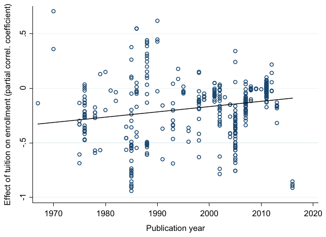
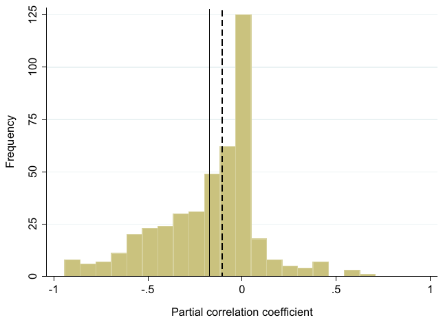
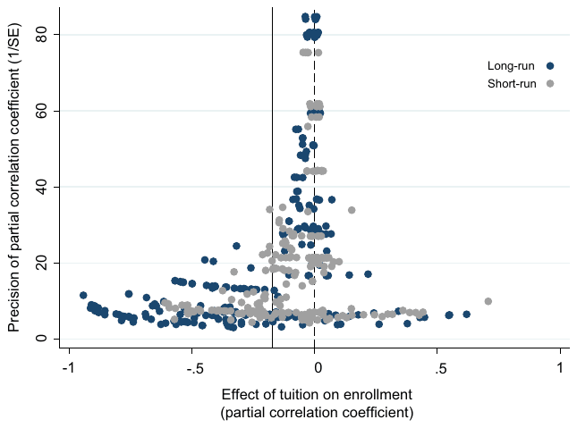
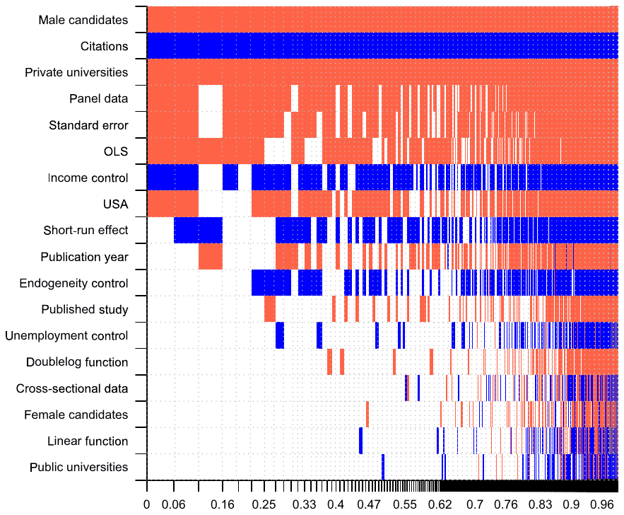

Tomas Havranek, Zuzana Irsova, and Olesia Zeynalova (2018): "Tuition Fees and University Enrolment: A Meta‐Regression Analysis". Oxford Bulletin of Economics and Statistics 80(6): 1145-1184. https://doi.org/10.1111/obes.12240.
Tomas Havranek,†,‡ Zuzana Irsova,‡ and Olesia Zeynalova‡
† Research Department, Czech National Bank, Prague, Czech Republic (e-mails: tomas.havranek@ies-prague.org, zuzana.irsova@ies-prague.org, lesya.fox89@gmail.com)
‡ Institute of Economic Studies, Faculty of Social Sciences, Charles University, Prague, Czech Republic
JEL Classification numbers: I23, I28, C52.
Data and code are available in an online appendix at http://meta-analysis.cz/education. Havranek acknowledges support from the Czech Science Foundation grant #18-02513S, and Irsova acknowledges support from the Czech Science Foundation grant #16-00027S. This project has also received funding from the European Union's Horizon 2020 Research and Innovation Staff Exchange program under the Marie Sklodowska-Curie grant agreement #681228 and Charles University project PRIMUS/17/HUM/16. We thank the editor and four anonymous referees of the Oxford Bulletin of Economics and Statistics for useful comments. We are also grateful to Craig Gallet for providing us with the data set used in his meta-analysis. The views expressed here are ours and not necessarily those of the Czech National Bank.
Abstract
One of the most frequently examined relationships in education economics is the correlation between tuition fee increases and the demand for higher education. We provide a quantitative synthesis of 443 estimates of this effect reported in 43 studies. While large negative estimates dominate the literature, we show that researchers report positive and insignificant estimates less often than they should. After correcting for this publication bias, we find that the literature is consistent with the mean tuition–enrolment elasticity being close to zero. Nevertheless, we identify substantial heterogeneity among the reported effects: for example, male students and students at private universities display larger elasticities. The results are robust to controlling for model uncertainty, using both Bayesian and frequentist methods of model averaging.
I. Introduction
The relationship between the demand for higher education and changes in tuition fees1 constitutes a key parameter not only for deans but also for policymakers. It is therefore not surprising that dozens of researchers have attempted to estimate this relationship. While the relationship (often, but not always, presented in the form of an elasticity) can be expected to vary somewhat across different groups of students and types of universities, there has been no consensus even on the mean effect, as many literature surveys demonstrate (see, for example, Jackson and Weathersby, 1975; Leslie and Brinkman, 1987; Heller, 1997): the estimates often differ by an order of magnitude, as we also show in Figure 1.

The academic discussion concerning the correlation between tuition fees and demand for higher education dates back at least to Ostheimer (1953). Even though large price elasticities do occasionally appear in the empirical literature (see, among others, Agarwal and Winkler, 1985; Allen and Shen, 1999; Buss, Parker and Rivenburg, 2004), the majority of the evidence corroborates the notion of a rather price-inelastic demand for higher education across many contexts. Researchers offer numerous explanations for the observed lack of large elasticities: for example, the effect of financial aid compensating tuition changes (Canton and de Jong, 2002), increasing earnings of graduates relative to those of non-graduates (Heller, 1997), historically small tuition fee increases in real terms and the impact of aggressive marketing (Leslie and Brinkman, 1987), larger student willingness to pay for quality (McDuff, 2007), expansion of the student pool with female and minority participants, and the fact that many university students come from higher-income families (Canton and de Jong, 2002). Even the very first literature review by Jackson and Weathersby (1975) put forward the case for the correlation between tuition and enrolment, while significant and negative, to be rather small in magnitude.
The existing narrative literature surveys, including Jackson and Weathersby (1975), McPherson (1978), Chisholm and Cohen (1982), Leslie and Brinkman (1987), and Heller (1997), place the tuition–enrollment relationship below a 1.5 percentage-point change per $100 tuition increase. The first quantitative review on this topic, Gallet (2007), puts the mean tuition elasticity of demand for higher education at −0.6. However, every single review acknowledges that the mean estimate could be somehow biased and driven by the vast differences in the design of studies, namely, methodological (Quigley and Rubinfeld, 1993), country-level (Elliott and Soo, 2013), institution-level (Hight, 1975), and qualitative differences. Our goal in this paper is to exploit the voluminous work of previous researchers on this topic, assign a pattern to the differences in results, and derive a mean effect that could be used as 'the best estimate for public policy purposes' that the literature has sought to identify (Leslie and Brinkman, 1987, p. 189).
Achieving our two goals involves collecting the reported estimates of the effect of tuition fees on enrolment and regressing them on the characteristics of students, universities, and other aspects of the data and methods employed in the original studies. Such a meta-analysis approach is complicated by two problems that have yet to be addressed in the literature on tuition and enrolment: publication selection and model uncertainty. Publication selection arises from the common preference of authors, editors, and referees for results that are intuitive and statistically significant. In the context of the tuition–enrolment nexus, one might well treat positive estimates with suspicion as few economists consider education to be Giffen good. Nevertheless, sufficient imprecision in estimation can easily yield a positive estimate, just as it can yield a very large negative estimate. The zero boundary provides a useful rule of thumb for model specification, but the lack of symmetry in the selection rule will typically lead to an exaggeration of the mean reported effect (Doucouliagos and Stanley, 2013).
The second problem, model uncertainty, arises frequently in meta-analysis because many factors may influence the reported coefficients. Nevertheless, absent clear guidance that would specify which variables (out of the many dozen potentially useful ones) must be included in and which must be excluded from the model, researchers face a dilemma between model parsimony and potential omitted variable bias. The easiest solution is to employ stepwise regression, but this approach is not appropriate because important variables can be excluded by accident in sequential t-tests (this problem is inevitable, to some extent, also with more sophisticated methods of model selection – every time we need to choose which variables to exclude).2 In contrast, we employ model averaging techniques that are commonly used in growth regressions: Bayesian model averaging and frequentist model averaging, which are well described and compared by Amini and Parmeter (2012). The essence of model averaging is to estimate (nearly) all models with the possible combinations of explanatory variables and weight them by statistics related to goodness of fit and parsimony.3
Our results suggest that the mean reported relation between tuition and enrolment is significantly downward biased because of publication selection (in other words, positive and insignificant estimates of the relationship are discriminated against). After correcting for publication selection, we find no evidence of a tuition–enrolment nexus on average. This result holds when we construct a synthetic study with ideal parameters (such as a large data set, control for endogeneity, etc.) and compute the implied 'best-practice estimate': this estimate is also close to zero. Nevertheless, we find evidence of substantial and systematic heterogeneity in the reported estimates. Most prominently, our results suggest that male students and students at private universities display substantial tuition elasticities.
The paper is organized as follows. Section II describes our approach to data collection and the basic properties of the dataset. Section III tests for the presence of publication selection bias. Section IV explores the data, method, and publication heterogeneity in the estimated effects of tuition fees on enrolment and constructs a best practice estimate of the relationship. Section V provides extensions and robustness checks. Section VI concludes the paper. An online appendix, available at http://meta-analysis.cz/education, provides the data and code that allow other researchers to replicate our results.
II. The data set
Researchers often, but not always, estimate the tuition–enrolment relationship in the form of the price elasticity of demand for higher education:
where the demand for education Enrollmentit typically denotes the total number of students enrolled in higher education institution i in time period t, Tuition denotes the tuition payment for higher education, Income denotes the family income of a student, and its respective coefficient YED denotes the income elasticity of demand. is the error term. The vector Controlsijt represents a set of explanatory variables j, such as proxies for the quality of education (university ranking, percentage of full professors employed, student/faculty ratio, average score on assessment tests), funding opportunities (grants, external financial support, the cost of loans), or labor market conditions (the level of unemployment or the wage gap between university-educated and high school-educated workers).
From the empirical literature reporting the correlation between tuition fees and the demand for higher education, we collect the coefficient PED. In equation (1), PED denotes the elasticity and captures the percent change in demand for higher education if tuition increases by 1%. The relationship between enrolment and tuition is, however, not always estimated in the literature in the form of an elasticity; sometimes other versions of (1) than log–log are used: the relationship can be linear or represented by the student price response coefficient (Jackson and Weathersby, 1975). Moreover, the definitions of the tuition and enrolment variables vary: while tuition can represent net financial aid or include other fees, enrolment can represent the total headcount of the enrolled, the number of applications, the percentage of enrolled students, or enrolment probability. Even the uncertainty measure surrounding the point estimates reported in the literature cannot always be converted into a standard error.
To be able to focus solely on elasticities and simultaneously make the sample fully comparable, we would need to eliminate a substantial part of the data (just as Gallet, 2007, did; moreover, our study faces an additional sample reduction since not all studies report an uncertainty measure, which we need to account for in estimating publication bias). Maximizing the number of observations and minimizing the mistakes made through conventional conversion calls for a different type of common metric. McPherson (1978, p. 180) supports the case of an ordinal measure: There is probably not a single number in the whole enrolment demand literature that should be taken seriously by itself. But a careful review of the literature will show that there are some important qualitative findings and order-of-magnitude estimates on which there is consensus, and which do deserve to be taken seriously. Therefore, we use all estimates of the tuition–enrolment nexus, including linear and semi-log specifications. We follow Doucouliagos (1995), Djankov and Murrell (2002), Doucouliagos and Laroche (2003), Babecky and Havranek (2014), Valickova, Havranek and Horvath (2015) and Havranek, Horvath and Zeynalov (2016), among others, and convert the collected estimates into partial correlation coefficients, which transform t-values to a measure that is not related to the size of the data set. Now, the PED coefficient is standardized to
| Agarwal and Winkler (1985) | Doyle and Cicarelli (1980) | Murphy and Trandel (1994) |
|---|---|---|
| Alexander and Frey (1984) | Elliott and Soo (2013) | Noorbakhsh and Culp (2002) |
| Allen and Shen (1999) | Grubb (1988) | Ordovensky (1995) |
| Berger and Kostal (2002) | Hemelt and Marcotte (2011) | Parker and Summers (1993) |
| Bezmen and Depken (1998) | Hight (1975) | Paulsen and Pogue (1988) |
| Bruckmeier et al. (2013) | Hoenack and Pierro (1990) | Quigley and Rubinfeld (1993) |
| Buss et al. (2004) | Hoenack and Weiler (1975) | Quinn and Price (1998) |
| Campbell and Siegel (1967) | Hsing and Chang (1996) | Savoca (1990) |
| Canton and de Jong (2002) | Huijsman et al. (1986) | Shin and Milton (2008) |
| Chen (2016) | Kane (2007) | Suloc (1982) |
| Cheslock (2001) | King (1993) | Tannen (1978) |
| Chressanthis (1986) | Knudsen and Servelle (1978) | Toutkoushian and Hollis (1998) |
| Coelli (2009) | Koshal, Gallaway and Akkihal (1976) | Tuckman (1970) |
| Craft et al. (2012) | McPherson and Schapiro (1991) | |
| Dearden, Fitzsimons and Wyness (2011) | Mueller and Rockerbie (2005) |
where PCC(PED)ij represents the estimated partial correlation coefficient of the i-th estimate of the tuition elasticity PED, with representing the corresponding t-statistics and DF(PED)ij representing the corresponding number of degrees of freedom reported in the j-th study. We take advantage of the previously published surveys on this topic, especially Leslie and Brinkman (1987), Heller (1997), and Gallet (2007), and extend the data sample by searching the Google Scholar database. The search query is available online at http://meta-analysis.cz/education. We added the last study on 23 September 2016.
The sample of studies we collect is subjected to three major selection criteria. First, the study must investigate the relationship between tuition and enrolment with enrolment as the dependent variable. This criterion eliminates multiple studies, including Mattila (1982), Galper and Dunn (1969), and Christofides, Cirello and Michael (2001), which estimate only income effects on enrolment. Second, the explanatory variable Tuition cannot be a dummy variable, which excludes studies such as Bruckmeier and Wigger (2014) and Dwenger, Storck and Wrohlich (2012) (Hübner, 2012, for example, uses a dummy variable indicating residence in a fee state to investigate the effects of tuition on enrolment probabilities). Third, the study must report a measure of uncertainty around the estimate (Corman and Davidson, 1984, for example, report neither t-statistics nor standard errors). The final sample of studies used in our meta-analysis is listed in Table 1.

Previous literature surveys argue for a relatively modest magnitude of the relationship between tuition and enrolment (generally in terms of the mean student price response coefficient): Jackson and Weathersby (1975), a survey of 7 studies published between 1967 and 1973, places the enrolment change in the range of (−0.05, −1.46) percentage points per 100 in 1982 dollars; and Heller (1997), a survey of 8 studies published between 1990 and 1996, reports a range of (−0.5, −1.0). The first literature survey to examine quantitatively the heterogeneity in the estimates appears much later: Gallet (2007), a meta-analysis of 295 observations from 53 studies published between 1953 and 2004, reports a mean tuition elasticity of demand for higher education of −0.6.
Our final data set covers 43 studies comprising 442 estimates of the relationship between enrolment in a higher education institution and tuition recalculated to partial correlation coefficients. The oldest study was published in 1967, and the newest was published in 2016, representing half of a century of research in the area. The (left-skewed) distribution of the reported coefficients is shown in Figure 2; the coefficients range from −.941 to .707 and are characterized by a mean of −0.171 and a median of −0.103. Approximately 25% of the estimates are larger than 0.33 in the absolute value, which, according to Doucouliagos (2011), can be classified as a 'large' partial correlation coefficient, while the mean coefficient is classified as a borderline 'medium' effect. Nevertheless, using Cohen's guidelines for correlations in social sciences (Cohen, 1988), the mean effect of −0.171 would be classified as a 'small' effect. Although the histogram only has one peak, Figure A1 and Figure A2 (presented in Appendix A) suggest substantial study- and country-level heterogeneity. Consequently, we collect 17 explanatory variables that describe the data and model characteristics and investigate the possible reasons for heterogeneity below in section IV.
| No. of observations | Unweighted Mean | Unweighted 95% confidence interval | Weighted Mean | Weighted 95% confidence interval | |||
|---|---|---|---|---|---|---|---|
| Temporal dynamics | |||||||
| Short-run effect | 209 | −0.106 | −0.134 | −0.078 | −0.135 | −0.169 | −0.101 |
| Long-run effect | 233 | −0.229 | −0.269 | −0.189 | −0.233 | −0.277 | −0.189 |
| Estimation technique | |||||||
| Control for endogeneity | 31 | −0.034 | −0.144 | 0.076 | −0.043 | −0.135 | 0.050 |
| No control for endogeneity | 411 | −0.181 | −0.207 | −0.155 | −0.219 | −0.249 | −0.189 |
| Data characteristics | |||||||
| Private universities | 115 | −0.086 | −0.127 | −0.044 | −0.236 | −0.284 | −0.188 |
| Public universities | 160 | −0.198 | −0.243 | −0.153 | −0.154 | −0.207 | −0.101 |
| Male candidates | 49 | −0.330 | −0.389 | −0.270 | −0.329 | −0.395 | −0.263 |
| Female candidates | 46 | −0.252 | −0.318 | −0.186 | −0.165 | −0.220 | −0.110 |
| Spatial variation | |||||||
| USA | 355 | −0.150 | −0.179 | −0.121 | −0.196 | −0.229 | −0.162 |
| Other countries | 87 | −0.256 | −0.305 | −0.207 | −0.136 | −0.171 | −0.102 |
| Publication status | |||||||
| Published study | 262 | −0.249 | −0.288 | −0.211 | −0.209 | −0.247 | −0.170 |
| Unpublished study | 180 | −0.056 | −0.075 | −0.038 | −0.076 | −0.106 | −0.047 |
| Publication year | |||||||
| Until 1980 | 48 | −0.227 | −0.299 | −0.155 | −0.206 | −0.308 | −0.103 |
| 1981–90 | 80 | −0.246 | −0.342 | −0.151 | −0.129 | −0.215 | −0.044 |
| 1991–2000 | 44 | −0.191 | −0.256 | −0.127 | −0.191 | −0.259 | −0.123 |
| 2001–10 | 144 | −0.218 | −0.254 | −0.183 | −0.208 | −0.245 | −0.170 |
| Since 2011 | 126 | −0.040 | −0.069 | −0.011 | −0.206 | −0.263 | −0.148 |
| All estimates | 442 | −0.171 | −0.196 | −0.145 | −0.186 | −0.214 | −0.158 |
| Random effects MA | 442 | −0.156 | −0.180 | −0.131 | −0.167 | −0.192 | −0.142 |
Notes: The table reports mean values of the partial correlation coefficients for different subsets of data. The exact definitions of the variables are available in Table 4. Weighted = estimates that are weighted by the inverse of the number of estimates per study. MA = meta-analysis.
Table 2 provides us with some preliminary information on the heterogeneity in the estimates. Estimating the mean partial correlation via restricted maximum likelihood random effects meta-analysis using the Hartung–Knapp modification (presented in the last row of the table) does not affect our previous discussion regarding the average size of the effect in question. Next, we summarize the simple mean values for each category and mean values weighted by the inverse number of estimates reported per study (to assign each study the same weight) according to different data, methodological, and publication characteristics. Larger studies with many estimates largely drive the simple mean of the partial correlation coefficients, especially in samples that consider private universities, female students, and countries outside the United States (a large portion of the estimates in the literature are estimated data from US universities, but some studies focus on other countries, especially in Europe). Thus, it seems reasonable to focus on the weighted statistics in the following discussion. We observe differences between the short- and long-term effects, which appear to be in line with intuition: a larger negative long-term coefficient would suggest that in the long run, students have more time to search for other competing providers of education. A substantial difference also appears when researchers do not account for the presence of endogeneity in the demand equation: controlling for endogeneity diminishes the partial correlation coefficient by 0.15; the effect itself is on the boundary between a small and medium effect, according to Doucouliagos's guidelines.
The evidence on one of the most widely studied topics in the literature, the difference in the elasticity between public and private institutions, changes when weighting is applied: Hopkins (1974), for example, finds that students in private institutions have a higher elasticity than those in public universities, which is consistent with the weighted average from Table 2. The simple average is to some extent skewed by the considerable number of positive estimates in larger studies (Grubb, 1988; Hemelt and Marcotte, 2011), which would correspond to a situation in which private universities use tuition as a signal of the quality of the university. Male candidates seem to display a larger elasticity to changes in tuition fees than female candidates, and the difference increases when weighting is applied (the result is well in line with Huijsman et al., 1986, but contradicts Bruckmeier, Fischer and Wigger, 2013, who do not find any differences). Spatial differences do not seem to be extensive; however, we observe that published studies report larger estimates of the effect of tuition on demand for higher education. Table 2 also shows that the estimates do not vary much in time (the apparent drop in the estimates over the last decade disappears when estimates are weighted). The differences in results between published and unpublished studies might indicate the presence of publication bias, although not necessarily.
III. Publication bias
Publication selection bias is especially likely to occur when there is a strong preference in the literature for a certain type of result. Both editors and researchers often yearn for significant estimates of a magnitude consistent with the commonly accepted theory. The law of demand, which implies a negative relationship between the price and demanded quantity of a good, is taken to be one of the most intuitive economic relationships; education
ENDNOTES
- For parsimony, in this paper, we usually omit 'fee' and use the word 'tuition' in its North American sense, 'a sum of money charged for teaching by a college or university'.
- Campos, Ericsson and Hendry (2005) provide a useful review of general-to-specific modelling.
- Model averaging allows us to take into account the model uncertainty associated with our meta-analysis model. Nevertheless, this approach does not address the model uncertainty in estimating the tuition–enrolment nexus in primary studies: this second source of model uncertainty is the reason for conducting a meta-analysis in the first place (Stanley and Jarrell, 1989; Stanley and Doucouliagos, 2012). A technical treatment of these two sources of model uncertainty with relation to Bayesian model averaging is available in appendix B of Havranek, Rusnak and Sokolova (2017).

Notes: The dashed vertical line indicates a zero partial correlation coefficient of the elasticity of demand for higher education; the solid vertical line indicates the mean partial correlation coefficient. When there is no publication selection bias, the estimates should be symmetrically distributed around the mean effect.
is unlikely to be perceived as a Giffen good (Doyle and Cicarelli, 1980).4 Therefore, researchers may treat positive estimates of the tuition–enrolment nexus with suspicion and sometimes do explicitly refer to the conventional expectation of the desired sign. (Canton and de Jong, 2002, p. 657), for example, comment on their results as follows: We find that the short-run coefficients all have the 'right' sign, except for the positive but insignificant coefficient on tuition fees …
Indeed, the unintuitive sign of an estimate might indicate identification problems; the probability of obtaining the 'wrong' sign increases with small samples, noisy data, or misspecification of the demand function (Stanley, 2005). We should, however, obtain the unintuitive sign of an estimate from time to time just by chance. Systematic under-reporting of estimates with the 'wrong' sign drives the global mean in the opposite direction. This distortion of reported results is a frequently reported phenomenon in economic research (for example, among other studies, Havranek and Irsova, 2011, 2012; Doucouliagos and Stanley, 2013; Rusnak, Havranek and Horvath, 2013; Havranek et al., 2015b; Havranek and Kokes, 2015; Ioannidis, Stanley and Doucouliagos, 2017). Studies addressing the law of demand are frequently affected by publication selection, but other areas also suffer from bias, with the economics of education being no exception: Fleury and Gilles (2015) report publication bias in the literature on the inter-generational transmission of education, Ashenfelter, Harmon and Oosterbeek (1999) find bias in the estimates of the rate of return to education, and Benos and Zotou (2014) report bias towards a positive impact of education on growth. Primary studies could, of course, incorporate theoretical expectations about the elasticity formally as priors within a Bayesian estimation framework, but this approach is unfortunately not used in the literature on the tuition–enrolment nexus.
The so-called funnel plot commonly serves as a visual test for publication bias (see, for example, Stanley and Doucouliagos, 2010, and the studies cited therein). It is a scatter plot with the effect's magnitude on the horizontal axis and its precision (the inverse of the standard error) on the vertical axis (Stanley, 2005). In the absence of publication bias, the graph resembles an inverted funnel, with the most precise estimates close to the underlying effect; with decreasing precision, the estimated coefficients become more dispersed and diverge from the underlying effect. Moreover, if the coefficients truly estimate the underlying effect with some random error, the inverted funnel should be symmetrical. The asymmetry in Figure 3 is consistent with the presence of publication bias related to the sign of the effect; if the bias is related to statistical significance, the funnel becomes hollow and wide. The literature exhibits a very similar pattern of bias for the short- and long-term elasticity estimates; thus, in the calculations that follow, we do not further divide the sample based on these two characteristics, but we control for the differences in the next section.
Following Stanley (2005, 2008), we examine the correlation between the partial correlation coefficients PCCs and their standard errors in a more formal, quantitative way:
where denotes i-th effect with the standard error estimated in the j-th study and is the error term. The intercept of the equation, , is the 'true' underlying effect absent publication bias; the coefficient of the standard error, , represents publication bias. In the case of zero publication bias (), the estimated effects should represent an underlying effect that includes random error. Otherwise (), we should observe correlation between the PCCs and their standard error, either because researchers discard positive estimates of PCCs () or because researchers compensate large standard errors with large estimates of PCCs. In other words, the properties of the standard techniques used to estimate the tuition–enrolment nexus yield a t-distribution of the ratio of point estimates to their standard errors, which means that the estimates and standard errors should be statistically independent quantities.
Table 3 reports the results of (3). In panel A, we present four different specifications applied to the unweighted sample: simple OLS, an instrumental variable specification in which the instrument for the standard error is the inverse of the square root of the number of observations (as in, for example, Stanley, 2005; Havranek, Irsova and Vlach, 2018b); OLS, in which the standard error is replaced by the aforementioned instrument (as in Havranek, 2015); and study-level between-effect estimation.5 In panel B, we weight all estimates by their precision, which assigns greater importance to more precise results and directly corrects for heteroscedasticity (Stanley and Jarrell, 1989), and furthermore, we weight all estimates by the inverse of the number of observations per study, which treats small and large studies equally. In accordance with the mean statistics from Table 2, the mean effect marginally increases (the mean relation between enrolment and tuition changes becomes less sensitive) and even becomes significant but is still close to zero.
| Panel A: Unweighted sample | OLS | IV | Proxy | Median |
|---|---|---|---|---|
| SE (publication bias) | −1.142*** | −1.915*** | −1.523*** | −1.318** |
| (0.36) | (0.43) | (0.27) | (0.52) | |
| Constant (effect absent bias) | −0.059 | 0.016 | −0.004 | −0.035 |
| (0.06) | (0.04) | (0.04) | (0.07) | |
| Observations | 442 | 442 | 442 | 442 |
| Panel B: Weighted sample | Precision | Study | ||
| WLS | IV | OLS | IV | |
| SE (publication bias) | −1.757*** | −2.305*** | −1.023*** | −1.753*** |
| (0.36) | (0.49) | (0.29) | (0.52) | |
| Constant (effect absent bias) | 0.001 | 0.026 | −0.069** | 0.015 |
| (0.02) | (0.02) | (0.03) | (0.05) |
Notes: The table reports the results of the regression , where denotes i-th tuition elasticity of demand for higher education estimated in the j-th study and denotes its standard error. Panel A reports results for the whole sample of estimates, and Panel B reports the results for the whole sample of estimates weighted by precision or study. OLS = ordinary least squares. IV = the inverse of the square root of the number of observations is used as an instrument for the standard error. Proxy = the inverse of the square root of the number of observations is used as a proxy for the standard error. Median = only median estimates of the tuition elasticities reported in the studies are included. Study = model is weighted by the inverse of the number of estimates per study. Precision = model is weighted by the inverse of the standard error of an estimate. WLS = weighted least squares. Standard errors in parentheses are robust and clustered at the study and country level (two-way clustering follows Cameron, Gelbach and Miller, 2011). *, **, ***.
Two important findings can be distilled from Table 3. First, publication bias is indeed present in our sample; according to the classification of Doucouliagos and Stanley (2013), the magnitude of selectivity ranges from substantial () to severe (). Second, we cannot reject the hypothesis that the underlying tuition-enrolment effect corrected for publication bias is zero. The estimated coefficient suggests that the true effect is very small or indeed zero. Nevertheless, Table 3 does not tell us whether data and method choices are correlated with the magnitude of publication bias or the underlying effect. We address these issues in the next section.
IV. Heterogeneity
Variables and estimation
Thirty years ago, Leslie and Brinkman (1987) concluded their review of the tuition-enrolment literature with disappointment regarding study heterogeneity: Weinschrott (1977) was correct when he warned about the difficulties in achieving consistency among such disparate studies. Data heterogeneity in our own sample is obvious from Figures A1 and A2, presented in Appendix A, and the substantial standard deviations of the mean statistics we report in Table 2. Therefore, we code 17 characteristics of study design as explanatory variables that capture additional variation in the data. The explanatory variables are listed in Table 4 and divided into four groups: variables capturing methodological differences, differences in the design of the demand function, differences in the data set, and publication characteristics. Table 4 also includes the definition of each variable, its simple mean, standard deviation and the mean weighted by the inverse of the number of observations extracted from a study.
Estimation characteristics
The exact distinction between short- and long-run effects is disputable in most economic studies (see, for example Espey, 1998). If the author does not clearly designate her estimate, we follow the basic intuition and classify the growth estimates as short-term and the level estimates as long-term. Static models, however, introduce ambiguity. If the data set covers only a short period of time, the estimate might not reflect the full long-term elasticity; thus, we label such estimates as short-run effects. Hoenack (1971) notes the importance of temporal dynamics: lowering costs in the long run encourages students to apply for higher education; in the short run, however, the change can only influence the current applicants. The long-run effects are therefore likely to be larger. We do not divide the sample between short- and long-run elasticities, which conforms to our previous discussion and the practice applied by the previous meta-analyses on this topic (Gallet, 2007).
Researchers use various techniques to estimate the tuition–enrolment relationship. Fixed effects in particular dominate the panel-data literature. More than one-third of the estimates are a product of simple OLS, and surprisingly few studies control for endogeneity: as Coelli (2009) emphasizes, an increase in tuition fees could be a response to an increase in the demand for higher education. Therefore, the estimated coefficient may also include a positive price response to the supply of student vacancies and thus underestimate the effect of tuition on the demand for higher education (Savoca, 1990). For this reason, we could expect the estimates that do not account for the endogeneity of tuition fees, such as those derived using OLS, to indicate a correlation with enrolment different than those derived using, say, instrumental variables (as in Neill, 2009, for example).6 To address this endogeneity bias, we include a dummy variable indicating methods that do control for endogeneity.
Design of the demand function
The relationship between tuition fees and the demand for higher education can be captured in multiple ways. We present in equation (1) the double-log functional form of the demand function, which produces the elasticity measure and accounts for half of the estimates in our sample (Allen and Shen, 1999; Noorbakhsh and Culp, 2002; Buss et al., 2004). Some authors, including McPherson and Schapiro (1991) and Bruckmeier et al. (2013), capture the simple linear relationship between the variables using a linear demand function. Semi-elasticities are also sometimes estimated and can be captured by the semi-log functional form (Shin and Milton, 2008); several authors use nonlinear Box–Cox transformations (such as Hsing and Chang, 1996, who test whether the estimated elasticity is indeed constant). We suspect that despite the transformation of all the estimates into partial correlation coefficients, some systematic deviations in the estimates might remain based on the form of the demand function.
| Variable | Description | Mean | SD | WM |
|---|---|---|---|---|
| Partial correlation coef. | Partial correlation coefficient derived from the estimate of the tuition–enrolment relationship. | −0.171 | 0.271 | −0.186 |
| Standard error | The estimated standard error of the tuition-enrolment estimate. | 0.097 | 0.070 | 0.115 |
| Estimation characteristics | ||||
| Short-run effect | = 1 if the estimated tuition–enrolment effect is short-term (in differences) instead of long-term (in levels). | 0.473 | 0.500 | 0.480 |
| OLS | = 1 if OLS is used for the estimation of the tuition–enrolment relationship. | 0.446 | 0.498 | 0.687 |
| Control for endogeneity | = 1 if the study controls for price endogeneity. | 0.070 | 0.256 | 0.187 |
| Design of the demand function | ||||
| Linear function | = 1 if the functional form of the demand equation is linear. | 0.296 | 0.457 | 0.301 |
| Double-log function | = 1 if the functional form of the demand equation is log-log. | 0.507 | 0.501 | 0.501 |
| Unemployment control | = 1 if the demand equation controls for the unemployment level. | 0.495 | 0.501 | 0.350 |
| Income control | = 1 if the demand equation controls for income differences. | 0.643 | 0.480 | 0.653 |
| Data specifications | ||||
| Cross-sectional data | = 1 if cross-sectional data are used for estimation instead of time-series or panel data. | 0.204 | 0.403 | 0.303 |
| Panel data | = 1 if panel data are used for estimation instead of cross-sectional or time-series data. | 0.557 | 0.497 | 0.347 |
| Male candidates | = 1 if the study estimates the tuition–enrolment relationship for male applicants only. | 0.111 | 0.314 | 0.075 |
| Female candidates | = 1 if the study estimates the tuition–enrolment relationship for female applicants only. | 0.104 | 0.306 | 0.051 |
| Private universities | = 1 if the study estimates the tuition–enrolment relationship for private universities only. | 0.260 | 0.439 | 0.233 |
| Public universities | = 1 if the study estimates the tuition–enrolment relationship for public universities only. | 0.362 | 0.481 | 0.454 |
| USA | = 1 if the tuition–enrolment relationship is estimated for the United States only. | 0.803 | 0.398 | 0.839 |
| Publication characteristics | ||||
| Publication year | Logarithm of the publication year of the study. | 7.601 | 0.006 | 7.598 |
| Citations | Logarithm of the number of citations the study received in Google Scholar. | 3.529 | 1.079 | 3.227 |
| Published study | = 1 if the study is published in a peer-reviewed journal. | 0.593 | 0.492 | 0.828 |
Notes: SD = standard deviation, SE = standard error, WM = mean weighted by the inverse of the number of estimates reported per study.
Researchers also specify demand equations to reflect various social and economic conditions of the applicants. We account for whether researchers control for the two most important of these conditions: the income level and unemployment rate. Lower-income students should be more responsive to changes in tuition than higher-income students (McPherson and Schapiro, 1991); we expect systematic differences between results that do and do not account for income differences. The effect of controlling for the unemployment level is not as straightforward. Some authors (such as Berger and Kostal, 2002) hypothesize that the unemployment rate might be positively associated with enrolment, as attending a higher education institution can represent a substitute for being employed. An unfavourable employment rate, by contrast, reduces the possibilities of financing higher education. Labour market conditions can also be captured by other variables, for example, real wages, as the opportunity costs of attending university (Mueller and Rockerbie, 2005) or a wage gap (Bruckmeier et al., 2013) reflecting the differences in earnings between those who did and did not participate in higher education.
Data specifications
Leslie and Brinkman (1987) note that while cross-sectional studies reflect the impact of explicit prices charged in the sample, panel studies reflect that each educational institution implicitly accounts for the price changes of other institutions. Different projection mechanisms could introduce heterogeneity in the estimates. Thus, we include a dummy variable for studies that rely on cross-sectional variation and for studies that rely on panel data (the reference category being time-series data). Since approximately 80% of our data are estimates for the USA, we plan to examine whether geography induces systematic differences in the estimated partial correlation coefficients. Elliott and Soo (2013) conduct a study of 26 different countries including the US: the global demand for higher education seems to be more price sensitive than US demand, although this conclusion is not completely robust.
The issue of male and female participants and their elasticities with respect to price changes has also been discussed in previous studies. Savoca (1990) claims that females could face lower earnings upon graduation; therefore, they may see higher education as a worse investment and be less likely to apply. Bruckmeier et al. (2013) shows that gender matters when technical universities are considered, while Mueller and Rockerbie (2005) find that male Canadian students are more price sensitive than their female counterparts. McPherson and Schapiro (1991), however, argue that the gender effect is in general constant across income groups, and Gallet (2007) does not find significant gender-related differences in reported estimates.
The differences between public and private educational institutions are also frequently discussed, and researchers agree that these institutions face considerably different demand unless student aid is provided. The results of Funk (1972) suggest the student price response to be consistently lower for private universities. Hight (1975) supports these conclusions and argues that the demand for community or public colleges tends to be more elastic than the demand for private colleges. In a similar vein, Leslie and Brinkman (1987) note that the average student at a private university has a higher family income base; furthermore, a lower-income student, who is also more likely to enrol in a public university, typically demonstrates higher tuition elasticities. However, Bezmen and Depken (1998) find those who apply to private universities to be more price sensitive.
Publication characteristics
While we do our best to control for the relevant data and method features, it is unfeasible to codify every single difference among all estimates. There might be unobserved aspects of data and methodology (or, more generally, quality) that drive the results. For this reason, a number of modern meta-analyses (such as Havranek et al., 2015a) employ a variable representing the publication year of the study: new studies are more likely to present methodological innovations that we might have missed in our previous discussion. Moreover, the equlibrium elasticity might have changed over time. It is plausible to argue that earlier in the sample, higher education is more or less a luxury good. More recently, however, with increasing higher education enrolment, higher education might have become more of a necessity. Furthermore, we exploit the number of citations in Google Scholar to reflect how heavily the study is used as a reference in the literature and information on publication status since the peer-review process can be thought of as an indication of study quality.
The purpose of this section is to investigate which of the method choices systematically influence the estimated partial correlation coefficients and whether the estimated coefficient of publication bias from section III survives the addition of these variables. Ideally, we would like to regress the partial correlation coefficient on all 17 characteristics listed above, plus the standard error. Since we have a relatively large number of explanatory variables, however, it is highly probable that some of the variables will prove redundant. The traditional use of model selection methods (such as eliminating insignificant variables one by one or choosing the final model specification in advance) often leads to overly optimistic confidence intervals. In this paper, we opt for model averaging techniques, which can address the model uncertainty inherent in meta-analysis.
Bayesian model averaging (BMA) is our preferred choice of estimation technique to analyse heterogeneity. BMA processes hundreds of thousands of regressions consisting of different subsets of the 18 explanatory variables. With such a large model space ( models to be estimated), we decide to follow some of the previous meta-analyses (such as Havranek and Rusnak, 2013; Irsova and Havranek, 2013; Havranek, Herman and Irsova, 2018a, who also use the bms R package by Feldkircher and Zeugner, 2009) and apply the Markov chain Monte Carlo algorithm, which considers only the most important models. Bayesian averaging computes weighted averages of the estimated coefficients (posterior means) across all the models using posterior model probabilities (analogous to information criteria in frequentist econometrics) as weights. Thus, all the coefficients have an approximately symmetrical distribution with a posterior standard deviation (analogous to the standard error). Each coefficient is also assigned a posterior inclusion probability (analogous to statistical significance), which is a sum of posterior model probabilities for the models in which the variable is included. Further details on BMA can be found, for example, in Eicher, Papageorgiou and Raftery (2011).
When applying BMA, researchers have to make several choices. The first choice, as we already mentioned, is whether to compute all models or to use the Markov chain Monte Carlo approximation. Generally, with more than 15 variables, it becomes infeasible to compute all models using a standard personal computer, so researchers typically approximate the whole model space by using the model composition Markov chain Monte Carlo algorithm (Madigan and York, 1995), which only traverses the most important part of the model space: that is, the models with high posterior model probabilities. The second choice is the weight of the prior on individual coefficients, the g-prior. The priors are almost always set at zero, which is considered to be the safest choice, unless we have a very strong reason to believe that the coefficients should have a particular magnitude (this is not the case in our study). The most commonly used weight gives the prior the same importance as one individual observation: that is, very little. This is called the unit information prior (UIP), and we apply it following Eicher et al. (2011). The third choice concerns the prior on model probability. Again, the most commonly used prior simply reflects that we have little knowledge ex ante, and so each model has the same prior weight. Eicher et al. (2011) show that the combination of this uniform model prior and the unit information g-prior performs well in predictive exercises. More technical details about BMA in meta-analysis can be found in appendix B of Havranek et al. (2017).
Although BMA is the most frequently used tool to address model uncertainty, recently proposed statistical routines for frequentist model averaging (FMA) make the latter a competitive alternative. Frequentist averaging, unlike the Bayesian version, does not require the use of explicit prior information. We follow Havranek et al. (2017), the first study to apply FMA in the meta-analysis framework, who use the approach of Amini and Parmeter (2012), which is based on the works of Hansen (2007) and Magnus, Powell and Prufer (2010). As in the case of BMA, we attempt to restrict our model space from the original models and use Mallow's model averaging estimator (Hansen, 2007) with an orthogonalization of the covariate space according to Amini and Parmeter (2012) to narrow the number of estimated models. Mallow's criterion helps to select asymptotically optimal weights for model averaging. Further details on this method can be found in Amini and Parmeter (2012).
Results
The results of the BMA estimation are visualized in Figure 4. The rows in the figure represent explanatory variables and are sorted according to the posterior inclusion probability from top to bottom in descending order. The columns represent models and are sorted according to the model inclusion probability from left to right in descending order. Each cell in the figure thus represents a specific variable in a specific model; a blue cell (darker in grayscale) indicates that the estimated coefficient of a variable is positive, a red cell (lighter in grayscale) indicates that the estimated coefficient of a variable is negative, and a blank cell indicates that the variable is not included in the model. Figure 4 also shows that nearly half of the variables are included in the best model and that their signs are robustly consistent across different models.
A numerical representation of the BMA results can be found in Table 5 (our preferred specification is BMA estimated with the uniform model prior and unit information prior
ENDNOTES
- On the other hand, it is important to mention the potential snob effect related to the price of education and anticipated in the discussion of Table 2. While the association between prices and demand is unlikely to be positive on average, it might easily be positive for some individual schools, students, or parents. This observation suggests that in the case of higher education, positive price elasticities may be somewhat more acceptable than, for example, those in the literature on gasoline demand (Havranek, Irsova and Janda, 2012).
- It is worth noting that while we also intended to use study-level fixed effects (a common robustness check accounting for unobserved study-level characteristics, see the online appendix of Havranek and Irsova, 2017), the high unbalancedness of our panel data set and the fact that a number of studies report only one observation make this specification infeasible.
- Note that some studies, such as Coelli (2009), use OLS while simultaneously attempting to minimize endogeneity bias using other than methodological treatments, mostly by including a detailed set of individual youth and parental characteristics.

following Eicher et al., 2011). Additionally, we provide two alternative specifications: first, a frequentist check estimated by simple OLS with robust standard errors clustered at the study and country level in which we include only variables from BMA with posterior inclusion probability higher than 0.5. Second, we provide a robustness check based on FMA, which includes all explanatory variables. All estimations are weighted using the inverse of the number of estimates reported per study. In the next section, we also provide the robustness checks of BMA with different priors (following Fernandez, Ley and Steel, 2001; Ley and Steel, 2009) and different weighting (by precision). Complete diagnostics of the BMA exercises can be found in Appendix B.
In interpreting the posterior inclusion probability, we follow Jeffreys (1961). The author categorizes values between 0.5 and 0.75 as weak, values between 0.75 and 0.95 as positive, values between 0.95 and 0.99 as strong, and values above 0.99 as decisive evidence for an effect. Table 5 thus testifies to decisive evidence of an effect in the cases of Male candidates, Private universities, and Citations; to positive evidence of an effect in the case of Panel data; and to weak evidence of an effect in the cases of the Short-run effect, OLS, Income control, and USA variables. While our robustness checks seem to support the conclusions from BMA, the evidence for an effect of the variables OLS and Control for endogeneity changes when FMA is employed.
| Response variable: | Bayesian model averaging | Frequentist check (OLS) | Frequentist model averaging | ||||||
|---|---|---|---|---|---|---|---|---|---|
| Tuition PCC | Post. mean | Post. SD | PIP | Coef. | SE | P-value | Coef. | SE | P-value |
| Constant | 0.002 | NA | 1.000 | −0.149 | 0.051 | 0.004 | 0.005 | 0.003 | 0.086 |
| Standard error | −0.650 | 0.439 | 0.758 | −0.673 | 0.099 | 0.000 | −0.712 | 0.252 | 0.005 |
| Estimation characteristics | |||||||||
| Short-run effect | 0.052 | 0.053 | 0.575 | 0.093 | 0.007 | 0.000 | 0.138 | 0.038 | 0.000 |
| OLS | −0.097 | 0.067 | 0.742 | −0.105 | 0.044 | 0.018 | −0.016 | 0.052 | 0.766 |
| Control for endogeneity | 0.052 | 0.073 | 0.414 | 0.165 | 0.052 | 0.002 | |||
| Design of the demand function | |||||||||
| Linear function | 0.000 | 0.011 | 0.064 | −0.072 | 0.052 | 0.172 | |||
| Double-log function | −0.003 | 0.015 | 0.095 | −0.068 | 0.046 | 0.134 | |||
| Unemployment control | 0.008 | 0.026 | 0.132 | 0.073 | 0.045 | 0.107 | |||
| Income control | 0.083 | 0.065 | 0.718 | 0.054 | 0.021 | 0.009 | 0.191 | 0.040 | 0.000 |
| Data specifications | |||||||||
| Cross-sectional data | 0.000 | 0.022 | 0.093 | −0.085 | 0.050 | 0.091 | |||
| Panel data | −0.112 | 0.073 | 0.784 | −0.018 | 0.013 | 0.168 | −0.238 | 0.055 | 0.000 |
| Male candidates | −0.351 | 0.062 | 1.000 | −0.227 | 0.073 | 0.002 | −0.381 | 0.065 | 0.000 |
| Female candidates | −0.007 | 0.040 | 0.072 | −0.145 | 0.110 | 0.189 | |||
| Private universities | −0.169 | 0.039 | 0.996 | −0.077 | 0.003 | 0.000 | −0.173 | 0.048 | 0.000 |
| Public universities | 0.001 | 0.012 | 0.060 | 0.011 | 0.038 | 0.767 | |||
| USA | −0.095 | 0.086 | 0.643 | −0.038 | 0.036 | 0.283 | −0.196 | 0.060 | 0.001 |
| Publication characteristics | |||||||||
| Publication year | −0.013 | 0.018 | 0.421 | −0.016 | 0.013 | 0.212 | |||
| Citations | 0.043 | 0.010 | 1.000 | 0.033 | 0.003 | 0.000 | 0.053 | 0.010 | 0.000 |
| Published study | −0.015 | 0.037 | 0.183 | −0.054 | 0.052 | 0.301 | |||
| Studies | 43 | 43 | 43 | ||||||
| Observations | 442 | 442 | 442 |
Notes: SD = standard deviation, SE = standard error, PIP = posterior inclusion probability. Bayesian model averaging (BMA) employs priors suggested by Eicher et al. (2011). The frequentist check (OLS) includes the variables recognized by BMA to comprise the best model and is estimated using standard errors clustered at the study and country level. Frequentist model averaging (FMA) follows Mallow's averaging using the orthogonalization of covariate space suggested by Amini and Parmeter (2012). All variables are described in Table 4. Additional details on the BMA exercise can be found in the Appendix B in Table A1 and Figure A4.
Publication bias and estimation characteristics
Although diminished to almost half of its original value (Table 3), the evidence for publication bias represented by the coefficient on the Standard error variable survives the inclusion of controls for data and method heterogeneity. The result supports our original conclusion that publication bias indeed plagues the literature estimating the relationship between tuition fees and the demand for higher education. The evidence on the short-run effect is in line with expectation from Table 2 (and the conclusions of Gallet, 2007): its positive coefficient suggests a lower sensitivity to price changes in the short-run than in the long run, when the enrolees have more time to adapt to a new pricing scheme and search for adequate substitutes.
Table 5 reports that the evidence on the importance of the OLS and Control for endogeneity variables is mixed across different model averaging approaches. The instability of the two coefficients is somewhat intuitive: studies using simple OLS rarely control for endogeneity; the correlation coefficient of these variables is −0.45. The direction of the effect of controlling for endogeneity that we identify is, however, not consistent with what is often found in the literature (Savoca, 1990; Neill, 2009): estimates that do not account for endogeneity are expected to show smaller effects since these estimates may capture the positive effects of price on the supply of education. Our results suggest that controlling for endogeneity understates the reported effects (although the corresponding posterior inclusion probability is less than 0.5, suggesting a very weak link). This finding is consistent with Gallet (2007), who reports that methods controlling for endogeneity generate more positive estimates than does OLS, and it suggests a potential problem with approaches to endogeneity control employed in the literature. Alternatively, the finding might also imply that economists do not fully understand the demand for education.
Several techniques are commonly used that attempt to purge the effects of endogeneity from the demand equation, but difficulties for researchers often arise while doing so. In the presence of endogeneity, OLS should directly lead to biased and inconsistent estimates, although some researchers justify its utilization by the identification of the supply and demand side. First, with public financing and/or constant operating costs supported by revenues collected from new enrolees, the universities may supply more enrolments without raising tuition (King, 1993). When applicants outstrip enrolment (which they often do), the tuition price in the face of excess demand does not clear the market for higher education. Researchers then assume the supply of admission at the market level of tuition to be infinitely elastic and all independent variables to explain only the demand side (justifying the utilization of OLS as in Mueller and Rockerbie, 2005). Second, as Coelli (2009) states, one could explain the demand side in such a detailed manner that would obliterate the remaining endogeneity. For this purpose, Coelli (2009) uses a set of rich individual student and parental characteristics.
The perfect elasticity of the supply side is, however, rather academic (we can never rule out the correlation between the explanatory variable and the error term of the demand equation with certainty). Moreover, detailed micro-level information usually comes from surveys and is unavailable for most researchers, which makes the simultaneous equation model difficult to estimate. The literature treating endogeneity thus relies on instrumental variables instead. Instrumental variables are defined as tuition correlates that should not directly affect the demand for higher education. Choosing the appropriate instrument might be tricky: the instrument must be strong enough to provide a source of variation for the model but must still show an exogenous source of variation. Also the fixed-effect instrumental variable estimation with a weak instrument can easily lead to results that are no better than those of OLS.
The lagged level of the endogenous variable represents a popular choice for an instrument (Allen and Shen, 1999). The tuition fee is typically further instrumented by an income level and unemployment rate (sometimes in lags, which reflect more realistic delayed adjustments in tuition), determinants of education costs (excess-tax on tuition, faculty salaries), and time dummies capturing other possible external influences. Two-stage and three-stage least squares typically appear in applications (Savoca, 1990; Berger and Kostal, 2002). The generalized-method-of-moments estimator (Arellano and Bond, 1991) is another frequently chosen technique. Nevertheless, contrary to the recommendations of Roodman (2009), many studies do not report the number of instruments used in the analysis. In a nutshell, we believe that even the results of the studies that claim to successfully control for endogeneity cannot be automatically interpreted causally.
Design of the demand function
According to our results, the functional form of the demand function does not systematically affect the reported coefficients. This conclusion differs from the findings of Gallet (2007), who argues that the outputs of semi-log, linear, and Box–Cox functional forms are significantly different from the results produced by directly estimating the double-log demand function. Furthermore, the inclusion of the control variable for unemployment also does not seem to drive the estimated sensitivity of enrolment to tuition changes; the control for an individual's income group, however, significantly decreases the estimated sensitivity.
Data specifications
Leslie and Brinkman (1987) report that estimates produced from cross-sectional data sets and time-series data sets do not vary substantially, and our results support this conclusion. Panel data, which combine both cross-sectional and time information, however, lead to partial correlation coefficients that are 0.11 smaller, other things being equal. We also argue that male students exhibit a systematically larger (by 0.35) sensitivity to changes in tuition in comparison with the general population, which is in contrast to the results of Gallet (2007), who finds that gender-related characteristics fail to significantly affect the reported tuition elasticity. The results are, however, in line with those of Mueller and Rockerbie (2005), who find males to be more price sensitive than females. As an explanation, Mueller and Rockerbie (2005) argue that since the rate of return to a university degree might be higher for a female than for a male, females are willing to spend more on tuition fees.
Some studies estimate the effect of tuition in public universities, while others consider private universities. We find that candidates applying to private universities display larger tuition elasticities. One interpretation of the different magnitudes of the price sensitivity is that the more or the better the substitutes are for a particular commodity, the higher the price sensitivity. In our case, students should be able to switch more easily to a substitute institution when private university tuition rises than when public university tuition rises, as the pool of substitutes for private institutions should be larger and also includes public universities (where costs are lower). These results, however, contradict those of Leslie and Brinkman (1987) and Hight (1975), who note that the average enrolee at a private university is rich and, thus, less price-elastic. Estimates for the US seem to be less negative than those for other countries. We would argue that given the extent of the US system of higher education, the pool of close substitutes might be larger in the US than in the rest of the world, where a single country hosts a smaller number of universities.
Publication characteristics
There are two results on publication characteristics that are consistent with the meta-analysis of Gallet (2007): the insignificance of publication year and publication status. Publication year may capture changes in methodological approaches; nevertheless, Table 5 indicates that the newer studies do not report systematically different results. Furthermore, we show in Table 2 that the partial correlation coefficients reported in Published studies are arguably smaller than those in unpublished or unrefereed studies. The impact of other explanatory variables, however, erases this link; in fact, Table 5 suggests the publication status of a study does not matter for the magnitude of the estimates. More important is how much attention the paper attracts from readers, which is captured by the number of citations. Highly cited articles report less-sensitive estimates of the tuition–enrolment relationship.
Thus far, we have argued that the mean reported value of the tuition-enrolment partial correlation coefficient, −0.19 (shown in Table 2), is significantly exaggerated by the presence of publication bias. The effect absent publication bias, shown in Table 3, is close to zero. We have also seen that the effect is substantially influenced by data, method, and publication characteristics. To provide the reader with a 'rule-of-thumb' mean effect that controls for all these influences and potential biases, we construct a synthetic 'best-practice' study that employs our preferred choices with respect to all the sources of heterogeneity in the literature. The definition of best practice is subjective, but it is a useful check of the combined effect of various misspecifications and publication bias. Essentially, we create a weighted average of all estimates by estimating fitted values from the BMA and FMA specifications.
The ideal study that we imagine would be published in a refereed journal, highly cited, and recent; thus, we set all publication characteristics at the sample maxima (we censor, however, the number of citations at the 99% level due to the presence of outliers – although using the sample maximum would provide us with an even stronger result). We remove any sources of publication and endogeneity bias; thus, we set the standard error and OLS at the sample minima and the control for endogeneity at the sample maximum. We prefer the usage of broader data sets and favour the inclusion of controls for the economic environment, and thus, we set the panel data set and controls for income and unemployment at the sample maxima. Moreover, we prefer the double-log functional form since it directly produces an elasticity and represents a measure with a clear interpretation that is independent of the current price level. We leave the remaining variables at their sample means.
| Bayesian model averaging | Frequentist model averaging | |||||
|---|---|---|---|---|---|---|
| Mean | 95% confidence interval | Mean | 95% confidence interval | |||
| Short-run effect | −0.010 | −0.032 | 0.012 | 0.069 | 0.047 | 0.090 |
| Long-run effect | −0.062 | −0.081 | −0.042 | −0.070 | −0.089 | −0.050 |
| Private universities | −0.167 | −0.190 | −0.144 | −0.141 | −0.164 | −0.117 |
| Public universities | 0.003 | −0.033 | 0.039 | 0.043 | 0.007 | 0.079 |
| Male candidates | −0.361 | −0.529 | −0.192 | −0.348 | −0.517 | −0.180 |
| Female candidates | −0.017 | −0.120 | 0.087 | −0.112 | −0.216 | −0.008 |
| All estimates | −0.037 | −0.055 | −0.019 | −0.003 | −0.021 | 0.015 |
Notes: The table presents mean estimates of the partial correlation coefficients implied by the Bayesian/frequentist model averaging and our definition of 'best practice'. Because Bayesian model averaging (BMA) does not work with the concept of standard errors, the confidence intervals for BMA are approximate and constructed using the standard errors estimated by simple OLS with robust standard errors clustered at the study and country level.
The 'best-practice' estimation in Table 6 yields a partial coefficient of −0.037 with a 95% confidence interval of (−0.055; −0.019). The estimated standard errors are relatively small, and even with plausible changes to the definition of best practice (such as changing the design of the demand function), the results reported in Table 6 change only at the third decimal place. The best-practice estimation thus corroborates our previous assertions regarding the correlation between tuition and enrolment: in general, we observe higher price elasticities in the long-run, higher elasticities among individuals enrolled in private universities, and higher elasticities among male students. The overall mean, however, is very close to zero.
V. Extensions and robustness checks
In this section, we pursue seven modifications of our baseline BMA model presented earlier. The results of these modifications are divided into two tables, one entitled 'robustness checks' (four specifications) and the other entitled 'extensions' (three specifications). Roughly speaking, robustness checks show the sensitivity of our main results to plausible changes in estimation strategy, while extensions provide new results. We start by discussing Table 7, which contains the robustness checks. The structure of the table is similar to what we have already seen in the previous section: the results shown include the posterior mean, posterior standard deviation, and posterior inclusion probability for each variable. The table is divided into four vertical panels, which mark different specifications.
The first specification in Table 7 uses a set of priors different from the one in our baseline model. In this robustness check, we follow Fernandez et al. (2001) and choose BRIC for g-prior; for model size, we use the beta-binomial random prior advocated by Ley and Steel (2009). Along with the plain vanilla UIP g-prior and uniform model prior used in the baseline model, the choice of priors in the robustness check constitutes arguably the most common combination of priors used in BMA. In our experience, the choice between UIP and BRIC rarely is material for BMA results. In contrast, the choice of model prior can have important effects.
The uniform model prior relies on the intuitive notion that each model, irrespective of the number of variables included, should have the same weight in results. Among all the possible models, the most common are those that contain the mean number of these variables (and the least common are those that include only a couple of them or almost all of them). In consequence, the uniform model prior puts more weight on models of mean size. An appealing alternative is to place the prior directly on model size, which is what we do here: we assume that ex ante, each model size has the same probability. In this application, the effect of this change on results is minimal. The estimated coefficients change little; we still obtain evidence of significant publication bias, and our discussion of the impact of individual variables would not change at all. This is an encouraging finding of robustness to a choice in priors, strengthened further by the fact that the frequentist model averaging
| Response variable: | Different BMA priors | Precision-weighted data | Elasticities | Spatial variation | ||||||||
|---|---|---|---|---|---|---|---|---|---|---|---|---|
| Tuition PCC | Post. mean | Post. SD | PIP | Post. mean | Post. SD | PIP | Post. mean | Post. SD | PIP | Post. mean | Post. SD | PIP |
| Constant | 0.002 | NA | 1.000 | −0.017 | NA | 1.000 | −0.011 | NA | 1.000 | 0.002 | NA | 1.000 |
| Standard error | −0.614 | 0.444 | 0.728 | −0.277 | 3.915 | 0.513 | −0.860 | 0.226 | 0.996 | −0.660 | 0.439 | 0.764 |
| Estimation characteristics | ||||||||||||
| Short-run effect | 0.058 | 0.054 | 0.617 | 0.023 | 0.031 | 0.417 | 0.374 | 0.209 | 0.879 | 0.051 | 0.053 | 0.562 |
| OLS | −0.096 | 0.067 | 0.742 | −0.001 | 0.013 | 0.075 | 0.004 | 0.058 | 0.110 | −0.097 | 0.066 | 0.747 |
| Control for endogeneity | 0.054 | 0.073 | 0.417 | 0.012 | 0.024 | 0.262 | 0.256 | 0.256 | 0.577 | 0.051 | 0.072 | 0.406 |
| Design of the demand function | ||||||||||||
| Linear function | −0.001 | 0.015 | 0.076 | −0.105 | 0.038 | 1.000 | 0.001 | 0.011 | 0.062 | |||
| Double log function | −0.004 | 0.016 | 0.101 | −0.054 | 0.054 | 0.639 | −0.004 | 0.015 | 0.094 | |||
| Unemployment control | 0.010 | 0.029 | 0.156 | 0.074 | 0.022 | 0.977 | 0.750 | 0.138 | 1.000 | 0.007 | 0.026 | 0.128 |
| Income control | 0.079 | 0.069 | 0.657 | 0.019 | 0.033 | 0.335 | −0.754 | 0.133 | 1.000 | 0.082 | 0.065 | 0.713 |
| Data specifications | ||||||||||||
| Cross-sectional data | −0.003 | 0.028 | 0.116 | 0.198 | 0.029 | 1.000 | 0.265 | 0.251 | 0.615 | 0.000 | 0.022 | 0.090 |
| Panel data | −0.109 | 0.077 | 0.746 | 0.009 | 0.027 | 0.157 | −0.606 | 0.126 | 1.000 | −0.112 | 0.072 | 0.788 |
| Male candidates | −0.349 | 0.063 | 1.000 | −0.213 | 0.055 | 0.996 | −0.012 | 0.113 | 0.074 | −0.351 | 0.062 | 1.000 |
| Female candidates | −0.010 | 0.049 | 0.091 | −0.030 | 0.066 | 0.219 | −0.009 | 0.107 | 0.071 | −0.006 | 0.040 | 0.070 |
| Private universities | −0.169 | 0.039 | 0.996 | 0.173 | 0.032 | 1.000 | −0.886 | 0.105 | 1.000 | −0.169 | 0.039 | 0.997 |
| Public universities | 0.001 | 0.012 | 0.065 | 0.167 | 0.028 | 1.000 | −0.404 | 0.096 | 0.996 | 0.001 | 0.011 | 0.058 |
| USA | −0.091 | 0.088 | 0.593 | −0.183 | 0.031 | 1.000 | −0.007 | 0.050 | 0.090 | −0.093 | 0.086 | 0.628 |
| Canada | 0.000 | 0.002 | 0.054 | |||||||||
| Netherlands | 0.001 | 0.005 | 0.084 |
| Response variable: | Different BMA priors | Precision-weighted data | Elasticities | Spatial variation | ||||||||
|---|---|---|---|---|---|---|---|---|---|---|---|---|
| Tuition PCC | Post. mean | Post. SD | PIP | Post. mean | Post. SD | PIP | Post. mean | Post. SD | PIP | Post. mean | Post. SD | PIP |
| Publication characteristics | ||||||||||||
| Publication year | −0.015 | 0.018 | 0.472 | 0.019 | 0.514 | 0.512 | −0.001 | 0.011 | 0.088 | −0.013 | 0.018 | 0.415 |
| Citations | 0.043 | 0.010 | 0.999 | 0.029 | 0.007 | 1.000 | 0.199 | 0.047 | 1.000 | 0.043 | 0.010 | 1.000 |
| Published study | −0.015 | 0.038 | 0.190 | −0.128 | 0.042 | 0.984 | −0.022 | 0.095 | 0.116 | −0.014 | 0.037 | 0.178 |
| Studies | 43 | 43 | 24 | 43 | ||||||||
| Observations | 442 | 442 | 224 | 442 |
Notes: SD = standard deviation. PIP = posterior inclusion probability. Different BMA prior = benchmark from Table 5 estimated using Bayesian model averaging (BMA) with model priors according to Fernandez et al. (2001) and Ley and Steel (2009). The corresponding visualization is represented by Figure B1, and the corresponding diagnostics of the BMA can be found in Table B1. Precision-weighted data = benchmark model with data weighted by the inverse of the standard error and estimated by BMA which uses model priors according to Table B2. The corresponding visualization is represented by Figure B2, and the corresponding diagnostics of the BMA can be found in Table B2. Different weighting schemes for meta-analysis are discussed in greater detail by Zigraiova and Havranek (2016, pp. 28–30). Elasticities = only estimates coming from double-log functional forms are considered. Spatial variation = dummy variables for estimates coming from Canada and Netherlands are included in the model. All variables are described in Table 4.
(which relies on a completely different econometric philosophy), presented in the previous section, delivers similar results as well.
In the second panel of Table 7, we use weights proportional to the reported precision of the estimates. These are appealing weights because they address the inherent heteroscedasticity problem in meta-analysis, and intuitively, it makes sense to give more weight to more precise results. Indeed, throughout the analysis, we have treated the estimates of the tuition–enrolment nexus as data points, although the estimates have uncertainty attached to them. The appendix to Havranek et al. (2017) shows technically how this uncertainty affects the results of Bayesian model averaging. In sum, our posterior inclusion probabilities might be exaggerated. This problem can be addressed in two ways: first, by estimating OLS or frequentist model averaging with robust standard errors (as we did in the previous section), and second, by estimating a BMA model with weights proportional to precision. This is an intuitive solution that also follows the literature on estimated dependent variable models, but such a precision-weighted BMA exercise lacks rigorous Bayesian foundations, as is also discussed by Havranek et al. (2017). Nevertheless, we proceed with the robustness check.
The precision-weighted BMA is more difficult to interpret because of increased collinearity. This issue is especially serious for variables that show little variation within studies; by using weights proportional to precision, we generate artificial correlation between these variables. In consequence, it is hard to comment on individual variables – with the exception of the standard error itself. We see from Table 7 that while the corresponding coefficient retains its negative sign, its magnitude drops. Additionally, the posterior inclusion probability decreases, although it still surpasses the 0.5 threshold: the underlying model is likely to include a variable that corrects for publication bias. Perhaps the most useful comparison between this robustness check and our baseline model involves computing the best-practice estimate: after all, that is the main output of our analysis. Because such an estimate uses the specification as a whole, it is not affected by collinearity problems. Here, we get a best-practice estimate of −0.04, which is very close to our baseline result and consistent with the notion that after correcting for publication bias and misspecifications, there is little evidence for any strong tuition–enrolment nexus.
The third panel of Table 7 focuses on the subset of estimates that are computed using the log–log specification. Consequentially, they can be interpreted as elasticities and allow for more direct discussion of the underlying economic effect of tuition fees. This is obviously a useful robustness check, but we have to exclude approximately 50% of the data set for which we are unable to reconstruct elasticities (very often, sample means for the data are not reported in the literature, so we cannot approximate elasticities for linear and other estimates). It is also clear that we have to omit from the BMA exercise variables that reflect the functional form used in primary studies, because now we only focus on log–log specifications. The estimated model thus changes somewhat, but evidence for publication bias is even stronger than in our baseline model: the posterior inclusion probability for this variable reaches 0.996. The implied best-practice estimate is, once again, statistically indistinguishable from zero.
In the last panel of Table 7, we add two more dummy variables reflecting spatial variation in the estimates of the tuition–enrolment nexus. A large majority of the estimates in our sample was derived from US data, but the next two countries with the largest number of estimates are Canada and the Netherlands (in total, our sample covers 21 countries, but for many of them, we only have a few estimates, so it is unfeasible to include dummy variables for all of them). Controlling for potential systematic differences in estimates for these two countries does not change our results, and the two dummy variables have low posterior inclusion probabilities (less than 0.1).
| No. of observations | Unweighted: Mean | Unweighted: 95% confidence interval | Unweighted: 95% confidence interval | Weighted: Mean | Weighted: 95% confidence interval | Weighted: 95% confidence interval | |
|---|---|---|---|---|---|---|---|
| Heterogeneity | |||||||
| Individual level | 85 | −0.294 | −0.352 | −0.236 | −0.234 | −0.299 | −0.168 |
| University level | 357 | −0.141 | −0.169 | −0.114 | −0.174 | −0.206 | −0.143 |
| Undergraduate enrolees | 288 | −0.118 | −0.148 | −0.088 | −0.169 | −0.206 | −0.133 |
| Graduate enrolees | 34 | −0.420 | −0.523 | −0.316 | −0.342 | −0.421 | −0.264 |
| Freshman enrolees | 132 | −0.124 | −0.163 | −0.084 | −0.190 | −0.243 | −0.138 |
| MBA programme | 8 | −0.324 | −0.462 | −0.186 | −0.328 | −0.458 | −0.199 |
| Spatial variation | |||||||
| Canada | 51 | −0.364 | −0.430 | −0.299 | −0.200 | −0.270 | −0.130 |
| Netherlands | 24 | −0.093 | −0.139 | −0.046 | −0.063 | −0.105 | −0.022 |
| All estimates | 442 | −0.171 | −0.196 | −0.145 | −0.186 | −0.214 | −0.158 |
Notes: The table reports mean values of the partial correlation coefficients for different subsets of data. The exact definitions of the variables are available in Table 4. Weighted = estimates that are weighted by the inverse of the number of estimates per study.
Now, we turn our attention to extensions of the baseline model. Sometimes it is not easy to draw a line between robustness checks and extensions (for example, the additional country dummies in the last panel of Table 7 might also be considered an extension), but the distinction is useful for presentation purposes. The core of the extensions presented in Table 9 consists of the addition of new potentially useful variables into the model. The reason that we do not consider these variables in the baseline model is the same reason that we do not, in the baseline, use weights that are proportional to precision: the inclusion of these new variables greatly increases collinearity, so we find it more useful to present them in a separate exercise. The new variables are first presented in Table 8, where we show sample means for the respective groups of estimates.
First, we include a dummy variable Individual level, which equals one for estimates that are computed using student-level data, as opposed to more aggregated data available at the university level. Individual-level estimates are relatively rare in the literature and, on average, seem to show larger partial correlation coefficients for the tuition–enrolment nexus. Next, we account for the type of study programme under examination: undergraduate, graduate, and MBA. We also include an additional dummy variable that equals one if the study focuses on freshman students. We observe larger partial correlation coefficients for graduates and MBAs (which makes good sense, because these products still have a special status, and students can easily choose to work instead, thereby increasing the price elasticity), but it is important to note that for these groups, we have relatively few observations.
In the first panel of Table 9, we explore the consequences of adding these new variables into our baseline model. In addition to variables listed in Table 8, we also include the square root of the number of observations used in the primary study: because partial correlation coefficients are a function of the number of observations, this variable may be important by definition. As we have noted earlier, collinearity increases above acceptable limits (many variables now have variance-inflation factors above 10), so the interpretation of the signs and magnitudes of individual coefficients should be taken with a grain of salt. That being said, the parameter corresponding to the magnitude of publication bias retains its negative sign but loses much of its importance (the posterior mean is now only −0.16 and posterior model probability is 0.28). Concerning the additional variables, two findings arise that also survive a later robustness check: first, ceteris paribus, studies using student-level data tend to find larger partial correlation coefficients than studies using university level data; second, MBA programmes are also associated with a stronger tuition–enrolment nexus. Undergraduate and graduate study programmes seem to display similar price elasticities, and the correlation between the number of observations and reported partial correlation is small (and disappears in a robustness check).
The second panel of Table 9 shows how the effect of selected variables changes in time. For this extension, we choose five important variables: standard error (reflecting publication bias), the use of OLS, control for endogeneity, use of cross-sectional data, and use of panel data. In our baseline BMA model, we find no systematic influence of the publication year of studies on the reported results. In contrast, we find evidence of systematic effects related to the use of OLS and panel data. In this extension, we find no evidence that the magnitude of publication bias would change in time (the interaction of the reported standard error and the publication year of the study has a posterior inclusion probability of about 0.12). A large posterior inclusion probability (1) is reported for the interaction between the use of panel data and publication year. The interaction is negative, which means that the negative effect of the use of panel data on the reported results identified in our baseline model has been strengthening in recent years. In the third column of the table, we merge both the extensions, which provide a simple robustness check. Overall, these two extensions suggest that data aggregation systematically affects results and that there is limited evidence for the literature converging to a consensus (which could be reflected, for example, by a trend in publication bias).
VI. Concluding remarks
In this paper, we conduct a quantitative synthesis of 442 estimates of the relationship between tuition fees and the demand for higher education reported in 43 studies. Our contribution on top of the previous meta-analysis by Gallet (2007) is twofold: first, we include a formal treatment of publication bias, and second, we include a treatment of model uncertainty using model averaging methods when searching for the determinants of the underlying effect. The literature shows substantial publication selection against positive estimates, suggesting that many researchers use the sign of the estimated effect as a specification test (education is unlikely to be a Giffen good). The mean effect beyond publication bias is close to zero. When we attribute greater weight to the more reliable estimates (published in respected journals and derived using appropriate methodology), we obtain a similarly small mean estimate of the tuition–enrolment nexus.
| Response variable: Tuition PCC | Additional variables: Post. mean | Additional variables: Post. SD | Additional variables: PIP | Time variation: Post. mean | Time variation: Post. SD | Time variation: PIP | Combined: Post. mean | Combined: Post. SD | Combined: PIP |
|---|---|---|---|---|---|---|---|---|---|
| Constant | 0.001 | NA | 1.000 | −0.001 | NA | 1.000 | −0.004 | NA | 1.000 |
| Standard error | −0.160 | 0.298 | 0.277 | −1.089 | 0.294 | 0.989 | −1.392 | 0.248 | 0.999 |
| Estimation characteristics | |||||||||
| Short-run effect | 0.000 | 0.009 | 0.048 | 0.169 | 0.045 | 0.993 | 0.001 | 0.009 | 0.058 |
| OLS | −0.005 | 0.020 | 0.100 | −0.055 | 0.075 | 0.431 | −0.074 | 0.061 | 0.669 |
| Control for endogeneity | 0.064 | 0.059 | 0.613 | 0.182 | 0.092 | 0.899 | 0.016 | 0.037 | 0.201 |
| Design of the demand function | |||||||||
| Linear function | 0.060 | 0.070 | 0.485 | −0.014 | 0.033 | 0.212 | 0.005 | 0.025 | 0.077 |
| Double log function | −0.047 | 0.055 | 0.484 | 0.000 | 0.012 | 0.062 | −0.134 | 0.040 | 0.967 |
| Unemployment control | 0.010 | 0.028 | 0.154 | 0.009 | 0.027 | 0.156 | 0.011 | 0.031 | 0.162 |
| Income control | 0.001 | 0.010 | 0.058 | 0.209 | 0.041 | 1.000 | 0.001 | 0.008 | 0.046 |
| Data specifications | |||||||||
| Cross-sectional data | 0.105 | 0.055 | 0.861 | −0.084 | 0.089 | 0.534 | −0.001 | 0.011 | 0.051 |
| Panel data | −0.010 | 0.032 | 0.146 | 0.021 | 0.055 | 0.177 | 0.293 | 0.063 | 0.999 |
| Male candidates | −0.431 | 0.067 | 1.000 | −0.372 | 0.062 | 1.000 | −0.451 | 0.061 | 1.000 |
| Female candidates | −0.037 | 0.092 | 0.187 | −0.009 | 0.041 | 0.083 | −0.008 | 0.040 | 0.079 |
| Private universities | −0.174 | 0.039 | 0.999 | −0.215 | 0.057 | 0.989 | −0.252 | 0.051 | 1.000 |
| Public universities | 0.000 | 0.009 | 0.044 | 0.052 | 0.057 | 0.533 | 0.044 | 0.053 | 0.484 |
| USA | −0.353 | 0.063 | 1.000 | 0.000 | 0.014 | 0.053 | −0.173 | 0.069 | 0.941 |
| Publication characteristics | |||||||||
| Publication year | −0.001 | 0.005 | 0.092 | −0.046 | 0.013 | 0.982 | −0.002 | 0.008 | 0.105 |
| Citations | 0.040 | 0.010 | 0.998 | 0.071 | 0.012 | 1.000 | 0.083 | 0.010 | 1.000 |
| Published study | 0.036 | 0.062 | 0.324 | −0.004 | 0.020 | 0.081 | 0.183 | 0.048 | 0.994 |
| Additional variables | |||||||||
| Individual level | −0.441 | 0.068 | 1.000 | −0.438 | 0.056 | 1.000 | |||
| Undergraduate enrolees | 0.009 | 0.026 | 0.157 | 0.000 | 0.009 | 0.052 | |||
| Graduate enrolees | −0.049 | 0.112 | 0.200 | −0.026 | 0.093 | 0.111 | |||
| Freshmen enrolees | 0.097 | 0.058 | 0.819 | 0.025 | 0.040 | 0.343 |
| Response variable: Tuition PCC | Additional variables: Post. mean | Additional variables: Post. SD | Additional variables: PIP | Time variation: Post. mean | Time variation: Post. SD | Time variation: PIP | Combined: Post. mean | Combined: Post. SD | Combined: PIP |
|---|---|---|---|---|---|---|---|---|---|
| MBA programme | −0.295 | 0.150 | 0.839 | −0.415 | 0.137 | 0.942 | |||
| Sqrt(observations) | 0.004 | 0.002 | 0.851 | 0.000 | 0.001 | 0.097 | |||
| Time variation | |||||||||
| Publication year × SE | 0.009 | 0.048 | 0.118 | −0.003 | 0.023 | 0.057 | |||
| Publication year × OLS | −0.006 | 0.010 | 0.304 | 0.000 | 0.002 | 0.053 | |||
| Publication year × endogeneity | −0.004 | 0.010 | 0.217 | 0.002 | 0.006 | 0.186 | |||
| Publication year × cross-section | −0.015 | 0.017 | 0.513 | 0.000 | 0.002 | 0.047 | |||
| Publication year × panel | −0.063 | 0.012 | 1.000 | −0.087 | 0.012 | 1.000 | |||
| Studies | 43 | 43 | 43 | ||||||
| Observations | 442 | 442 | 442 |
Notes: SD = standard deviation. PIP = posterior inclusion probability. All models are estimated using Bayesian model averaging employing priors suggested by Eicher et al. (2011).
We also find evidence for systematic dependencies between the estimated effects and data, methodological, and publication characteristics. Male students display larger tuition elasticities, as do students at private universities. Previous research has yielded mixed results on both of these relationships. Our findings concerning male students are consistent with those of Mueller and Rockerbie (2005), who argue that because female students tend to have a higher rate of return from university education, they are willing to spend more on tuition fees. Concerning private universities, it might be easier for their students to find substitutes if tuition increases; for public university students, a large portion of the market (most private universities) is already unaffordable. Next, we find that highly cited studies tend to report little correlation between enrolment and tuition, although the direction of causality is unclear. Our results also suggest that the reported relationship is larger for US students and when panel data are used, while it is lower when income is controlled for and in the short run. Moreover, it is remarkable that the correlation between tuition and enrolment has been stable in time over the last 50 years.
Two qualifications of our analysis are in order. First, while we would prefer to work with elasticities, many studies estimate the relationship between tuition fees and enrolment using approaches other than the log-log specification. We already have to exclude a significant portion of studies because they do not report standard errors, t-statistics, or confidence intervals for their results, thus making it impossible for us to test the presence of publication bias. Restricting our dataset to log-log specifications would drastically reduce the number of degrees of freedom available for our analysis. While it is possible to recompute some of the other coefficients to elasticities evaluated at the sample mean, many studies do not report the statistics necessary for this computation. Therefore, we choose to work with partial correlation coefficients, which can be computed easily from all the studies, and we include an analysis of the sub-sample of elasticities only as an extension. Since our main result indicates negligible partial correlation absent publication bias, it also directly translates into a finding of a zero mean elasticity of demand for higher education to tuition fees. Second, the results of a meta-analysis are clearly conditional on the quality of the previous studies included in the sample. For instance, if all studies in the literature share a common misspecification that biases their results towards zero, we are unable to control for such a misspecification, and our results are thus also biased. Therefore, the correct interpretation of our analysis is that, judging from the available empirical research, our best guess concerning the effect of tuition on enrolment is close to zero.
Appendix A.
Supplementary statistics and diagnostics of BMA
| Mean no. regressors | Draws | Burn-ins | Time | No. models visited |
|---|---|---|---|---|
| 8.7563 | 5.495486 mins | 578,591 | ||
| Modelspace | Visited | Topmodels | Corr PMP | No. observations |
| 262,144 | 22.10% | 100% | 0.9988 | 442 |
| Model prior | g-prior | Shrinkage-stats | ||
| Uniform | UIP | Av = 0.9977 |
Notes: We employ the priors suggested by Eicher et al. (2011), who recommend using the uniform model prior (each model has the same prior probability) and the unit information prior (the prior provides the same amount of information as one observation in the data). The results of this Bayesian model averaging (BMA) exercise are reported in Table 5.
Figure A1. Estimates of the tuition–enrolment nexus vary within and across studies Notes: The figure shows a box plot of the partial correlation coefficients capturing the relationship between tuition and the demand for higher education reported in individual studies.
Figure A2. Estimates of the elasticity vary across different countries Notes: The figure shows a box plot of the partial correlation coefficients capturing the relationship between tuition and the demand for higher education reported for individual countries.
Figure A3. Posterior coefficient distributions for the most important characteristics Notes: The figure depicts the densities of the regression parameters from Table 5 with the highest posterior inclusion probabilities.
Figure A4. Model size and convergence of main BMA estimation Notes: The figure depicts the posterior model size distribution and the posterior model probabilities of the BMA exercise reported in Table 5.
Figure A5. Correlations between the variables from Table 5 Notes: The figure depicts the correlation coefficients between variables included in the benchmark BMA exercise from Table 5. The definition and summary statistics of the variables can be found in Table 4.
Appendix B
Diagnostics of BMA robustness checks
Figure B1. Model inclusion in Bayesian model averaging (BMA) – Different BMA priors specification Notes: The figure depicts the results of the BMA related to different BMA priors specification reported in Table 7.
| Mean no. regressors | Draws | Burn-ins | Time | No. models visited |
|---|---|---|---|---|
| 8.7698 | 5.869949 mins | 572,046 | ||
| Modelspace | Visited | Topmodels | Corr PMP | No. observations |
| 262,144 | 21.80% | 100% | 0.9999 | 442 |
| Model prior | g-prior | Shrinkage-stats | ||
| Random | BRIC | Av = 0.9977 |
Notes: We employ the ‘random’ model prior, which refers to the beta-binomial prior advocated by Ley and Steel (2009); Zellner’s g prior is set according to Fernandez et al. (2001). The results of this Bayesian model averaging (BMA) exercise are reported in Table 5 (different BMA priors specification).
Figure B2. Model inclusion in Bayesian model averaging (BMA) – Precision-weighted data specification Notes: The figure depicts the results of the BMA related to precision-weighted data specification reported in Table 7.
| Mean no. regressors | Draws | Burn-ins | Time | No. models visited |
|---|---|---|---|---|
| 12.0906 | 6.009023 mins | 465,235 | ||
| Modelspace | Visited | Topmodels | Corr PMP | No. observations |
| 262,144 | 17.70% | 100% | 0.9995 | 442 |
| Model prior | g-prior | Shrinkage-stats | ||
| Uniform | UIP | Av = 0.9977 |
Notes: We employ the priors suggested by Eicher et al. (2011), who recommend using the uniform model prior (each model has the same prior probability) and the unit information prior (the prior provides the same amount of information as one observation in the data). The results of this Bayesian model averaging (BMA) exercise are reported in Table 7 (precision-weighted data specification).
Final Manuscript Received: June 2018
References
- Agarwal, V. B. and Winkler, D. R. (1985). ‘Foreign demand for united states higher education: a study of developing countries in the eastern hemisphere’, Economic Development and Cultural Change, Vol. 33, pp. 623–644.
- Alexander, E. and Frey, D. (1984). ‘An econometric estimate of the demand for MBA enrollment’, Economics of Education Review, Vol. 3, pp. 97–103.
- Allen, R. and Shen, J. (1999). ‘Some new evidence of the character of competition among higher education institutions’, Economics of Education Review, Vol. 18, pp. 465–470.
- Amini, S. M. and Parmeter, C. F. (2012). ‘Comparison of model averaging techniques: assessing growth determinants’, Journal of Applied Econometrics, Vol. 27, pp. 870–876.
- Arellano, M. and Bond, S. (1991). ‘Some tests of specification for panel data: Monte Carlo evidence and an application to employment equation’, The Review of Economic Studies, Vol. 58, pp. 277–297.
- Ashenfelter, O., Harmon, C. and Oosterbeek, H. (1999). ‘A review of estimates of the schooling/earnings relationship, with tests for publication bias’, Labour Economics, Vol. 6, pp. 453–470.
- Babecky, J. and Havranek, T. (2014). ‘Structural reforms and growth in transition’, The Economics of Transition, Vol. 22, pp. 13–42.
- Benos, N. and Zotou, S. (2014). ‘Education and economic growth: a meta-regression analysis’, World Development, Vol. 64, pp. 669–689.
- Berger, M. and Kostal, T. (2002). ‘Financial resources, regulation, and enrollment in US public higher education’, Economics of Education Review, Vol. 21, pp. 101–110.
- Bezmen, T. and Depken, C. (1998). ‘School characteristics and the demand for college’, Economics of Education Review, Vol. 17, pp. 205–210.
- Bruckmeier, K. and Wigger, B. U. (2014). ‘The effects of tuition fees on transition from high school to university in Germany’, Economics of Education Review, Vol. 41, pp. 14–23.
- Bruckmeier, K., Fischer, G. and Wigger, B. (2013). ‘The willingness to pay for higher education: does the type of fee matter?’, Applied Economics Letters, Vol. 20, pp. 1279–1282.
- Buss, C., Parker, J. and Rivenburg, J. (2004). ‘Cost, quality and enrollment demand at liberal arts colleges’, Economics of Education Review, Vol. 23, pp. 57–65.
- Cameron, A. C., Gelbach, J. B. and Miller, D. L. (2011). ‘Robust inference with multiway clustering’, Journal of Business & Economic Statistics, Vol. 29, pp. 238–249.
- Campbell, R. and Siegel, B. N. (1967). ‘The demand for higher education in the United States, 1919–1964’, The American Economic Review, Vol. 57, pp. 482–294.
- Campos, J., Ericsson, N. and Hendry, D. (2005). General-to-Specific Modeling, chapter General-to-Specific Modeling: An Overview and Selected Bibliography, Edward Elgar Publishing, Cheltenham.
- Canton, E. and de Jong, F. (2002). ‘The demand for higher education in the Netherlands, 1950–1999’, Economics of Education Review, Vol. 24, pp. 651–663.
- Chen, S. (2016). ‘College costs, freshman enrollment, and student quality: evidence from an Urban State University’, International Journal of Information and Education Technology, Vol. 6, pp. 664–671.
- Cheslock, J. (2001). The Determinants of an Institution’s Transfer Student Enrollment, Working Paper No. 20/2001, Center for the Study of Higher Education at the University of Arizona.
- Chisholm, M. and Cohen, B. (1982). A Review and Introduction to Higher Education Price Response Studies, Working Paper Series, Boulder, CO: National Center for Higher Education Management Systems, http://files.eric.ed.gov/fulltext/ED246805.pdf.
- Chressanthis, G. (1986). ‘The impacts of tuition rate changes on college undergraduate headcounts and credit hours over time: a case study’, Economics of Education Review, Vol. 5, pp. 205–217.
- Christofides, L., Cirello, J. and Michael, H. (2001). ‘Family income and postsecondary education in Canada’, Canadian Journal of Economics/Revue canadienne d’économique, Vol. 31, pp. 177–208.
- Coelli, M. (2009). ‘Tuition fees and equality of university enrolment’, Canadian Journal of Economics/Revue canadienne d’économique, Vol. 42, pp. 1072–1099.
- Cohen, J. (1988). Statistical Power Analysis for the Behavioral Sciences, Routledge, New York.
- Corman, H. and Davidson, P. (1984). ‘Economic aspects of post-secondary schooling decisions’, Economics of Educonon Review, Vol. 3, pp. 131–139.
- Craft, R., Baker, J., Myers, B. and Harraf, A. (2012). Tuition Revenues and Enrollment Demand: The Case of Southern Utah University, Report No. 124/2012, Association for Institutional Research, Tallahassee, FL.
- Dearden, L., Fitzsimons, E. and Wyness, G. (2011). The Impact of Tuition Fees and Support on University Participation in the UK, Working Paper No. 126/2011, Centre for the Economics of Education, London School of Economics.
- Djankov, S. and Murrell, P. (2002). ‘Enterprise restructuring in transition: a quantitative survey’, Journal of Economic Literature, Vol. 40, pp. 739–792.
- Doucouliagos, C. (1995). ‘Worker participation and productivity in labor-managed and participatory capitalist firms: a meta-analysis’, ILR Review, Vol. 49, pp. 58–77.
- Doucouliagos, C. (2011). How Large is Large? Preliminary and Relative Guidelines for Interpreting Partial Correlations in Economics, Economics Series No. 2011/5, Deakin University, Faculty of Business and Law, School of Accounting, Economics and Finance.
- Doucouliagos, C. and Laroche, P. (2003). ‘What do unions do to productivity? A meta-analysis’, Industrial Relations, Vol. 42, pp. 650–691.
- Doucouliagos, C. and Stanley, T. D. (2013). ‘Are all economic facts greatly exaggerated? Theory competition and selectivity’, Journal of Economic Surveys, Vol. 27, pp. 316–339.
- Doyle, C. and Cicarelli, J. (1980). ‘The demand for higher education: a disaggregate approach’, The American Economist, Vol. 24, pp. 53–55.
- Dwenger, N., Storck, J. and Wrohlich, K. (2012). ‘Do tuition fees affect the mobility of university applicants? Evidence from a natural experiment’, Economics of Education Review, Vol. 31, pp. 155–167.
- Eicher, T. S., Papageorgiou, C. and Raftery, A. E. (2011). ‘Default priors and predictive performance in Bayesian model averaging, with application to growth determinants’, Journal of Applied Econometrics, Vol. 26, pp. 30–55.
- Elliott, C. and Soo, K. (2013). ‘The international market for MBA qualifications: the relationship between tuition fees and applications’, Economics of Education Review, Vol. 34, pp. 162–174.
- Espey, M. (1998). ‘Gasoline demand revisited: an international meta-analysis of elasticities’, Energy Economics, Vol. 20, pp. 273–295.
- Feldkircher, M. and Zeugner, S. (2009). Benchmark Priors Revisited: On Adaptive Shrinkage and the Supermodel Effect in Bayesian Model Averaging, IMF Working Papers No. 09/202/2009, International Monetary Fund.
- Fernandez, C., Ley, E. and Steel, M. (2001). ‘Benchmark priors for Bayesian model averaging’, Journal of Econometrics, Vol. 100, pp. 381–427.
- Fleury, N. and Gilles, F. (2015). A Meta-Regression Analysis on Intergenerational Transmission of Education: Publication Bias and Genuine Empirical Effect, TEPP Working Paper No. 02/2015, TEPP.
- Funk, H. J. (1972). ‘Price elasticity of demand for education at a private university’, Journal of Educational Research, Vol. 66, pp. 130–134.
- Gallet, C. (2007). ‘A comparative analysis of the demand for higher education: results from a meta-analysis of elasticities’, Economics Bulletin, Vol. 9, pp. 1–14.
- Galper, H. and Dunn, R. M. (1969). ‘A short-run demand function for higher education in the United States’, Journal of Political Economy, Vol. 77, pp. 765–777.
- Grubb, W. (1988). ‘Vocationalizing higher education: the causes of enrollment and completion in public two-year colleges, 970–1980’, Economics of Education Review, Vol. 7, pp. 301–319.
- Hansen, B. (2007). ‘Least squares model averaging’, Econometrica, Vol. 75, pp. 1175–1189.
- Havranek, T. (2015). Measuring intertemporal substitution: The importance of method choices and selective reporting’, Journal of the European Economic Association, Vol. 13, pp. 1180–1204.
- Havranek, T. and Irsova, Z. (2011). ‘Estimating vertical spillovers from FDI: why results vary and what the true effect is’, Journal of International Economics, Vol. 85, pp. 234–244.
- Havranek, T. and Irsova, Z. (2012). ‘Survey article: publication bias in the literature on foreign direct investment spillovers’, Journal of Development Studies, Vol. 48, pp. 1375–1396.
- Havranek, T. and Irsova, Z. (2017). ‘Do borders really slash trade? A meta-analysis’, IMF Economic Review, Vol. 65, pp. 365–396.
- Havranek, T. and Kokes, O. (2015). ‘Income elasticity of gasoline demand: a meta-analysis’, Energy Economics, Vol. 47, pp. 77–86.
- Havranek, T. and Rusnak, M. (2013). ‘Transmission lags of monetary policy: a meta-analysis’, International Journal of Central Banking, Vol. 9, pp. 39–76.
- Havranek, T., Irsova, Z. and Janda, K. (2012). ‘Demand for gasoline is more price-inelastic than commonly thought’, Energy Economics, Vol. 34, pp. 201–207.
- Havranek, T., Irsova, Z., Janda, K. and Zilberman, D. (2015a). ‘Selective reporting and the social cost of carbon’, Energy Economics, Vol. 51, pp. 394–406.
- Havranek, T., Horvath, R., Irsova, Z. and Rusnak, M. (2015b). ‘Cross-country heterogeneity in intertemporal substitution’, Journal of International Economics, Vol. 96, pp. 100–118.
- Havranek, T., Horvath, R. and Zeynalov, A. (2016). ‘Natural resources and economic growth: a meta-analysis’, World Development, Vol. 88, pp. 134–151.
- Havranek, T., Rusnak, M. and Sokolova, A. (2017). ‘Habit formation in consumption: a meta-analysis’, European Economic Review, Vol. 95, pp. 142–167.
- Havranek, T., Herman, D. and Irsova, Z. (2018a). ‘Does daylight saving save electricity? A meta-analysis’, Energy Journal, Vol. 39, pp. 35–61.
- Havranek, T., Irsova, Z. and Vlach, T. (2018b). ‘Measuring the income elasticity of water demand: the importance of publication and endogeneity biases’, Land Economics, Vol. 94, pp. 259–283.
- Heller, D. E. (1997). ‘Student price response in higher education: an update to Leslie and Brinkman’, The Journal of Higher Education, Vol. 68, pp. 624–659.
- Hemelt, S. and Marcotte, D. (2011). ‘The impact of tuition increases on enrollment at public colleges and universities’, Educational Evaluation and Policy Analysis, Vol. 33, pp. 435–357.
- Hight, J. (1975). ‘The demand for higher education in the US 1927–72: the public and private institutions’, The Journal of Human Resources, Vol. 10, pp. 512–520.
- Hoenack, S. A. (1971), ‘The efficient allocation of subsidies to college students’, American Economic Review, Vol. 61, pp. 302–311.
- Hoenack, S. and Pierro, D. (1990). ‘An econometric model of a public university’s income and enrollments’, Journal of Economic Behavior & Organization, Vol. 14, pp. 403–423.
- Hoenack, S. and Weiler, W. (1975). ‘Cost-related tuition policies and university enrollments’, Journal of Human Resources, Vol. 10, pp. 332–360.
- Hopkins, T. (1974). ‘Higher education enrollment demand’, Economic Inquiry, Vol. 12, pp. 53–65.
- Hsing, Y. and Chang, H. (1996). ‘Testing increasing sensitivity of enrollment at private institutions to tuition and other costs’, The American Economist, Vol. 40, pp. 40–45.
- Hübner, M. (2012). ‘Do tuition fees affect enrollment behavior? Evidence from a ‘natural experiment’ in Germany’, Economics of Education Review, Vol. 31, pp. 949–960.
- Huijsman, R., Kloek, T., Kodde, D. and Ritzen, J. (1986). ‘An empirical analysis of college enrollment in the Netherlands’, De Economist, Vol. 134, pp. 181–190.
- Ioannidis, J. P. A., Stanley, T. D. and Doucouliagos, H. (2017). ‘The power of bias in economics research’, Economic Journal, Vol. 127, pp. F236–F265.
- Irsova, Z. and Havranek, T. (2013). ‘Determinants of horizontal spillovers from FDI: evidence from a large meta-analysis’, World Development, Vol. 42, pp. 1–15.
- Jackson, G. A. and Weathersby, G. B. (1975). ‘Individual demand for higher education: a review and analysis of recent empirical studies’, The Journal of Higher Education, Vol. 46, pp. 623–651.
- Jeffreys, H. (1961). Theory of Probability (3rd edn). Oxford Classic Texts in the Physical Sciences, Oxford University Press, Oxford.
- Kane, T. (2007). ‘Evaluating the impact of the DC tuition assistance grant program’, Journal of Human Resources, Vol. 42, pp. 555–582.
- King, J. (1993). ‘The demand for higher education in Puerto Rico’, Economics of Education Review, Vol. 12, pp. 257–265.
- Knudsen, O. and Servelle, P. (1978). ‘The demand for higher education at private institutions of moderate selectivity’, The American Economist, Vol. 22, pp. 30–34.
- Koshal, R., Gallaway, L. and Akkihal, R. (1976). ‘Determinants of male and female higher education in the United States’, Social Indicators Research, Vol. 3, pp. 111–121.
- Leslie, L. L. and Brinkman, P. T. (1987). ‘Student price response in higher education: the student demand studies’, The Journal of Higher Education, Vol. 58, pp. 181–204.
- Ley, E. and Steel, M. F. (2009). ‘On the effect of prior assumptions in Bayesian model averaging with applications to growth regression’, Journal of Applied Econometrics, Vol. 24, pp. 651–674.
- Madigan, D. and York, J. (1995). ‘Bayesian graphical models for discrete data’, International Statistical Review, Vol. 63, pp. 215–232.
- Magnus, J. R., Powell, O. and Prufer, P. (2010). ‘A comparison of two model averaging techniques with an application to growth empirics’, Journal of Econometrics, Vol. 154, pp. 139–153.
- Mattila, J. P. (1982). ‘Determinants of male school enrollments: a time-series analysis’, The Review of Economics and Statistics, Vol. 64, pp. 242–251.
- McDuff, D. (2007). ‘Quality, tuition, and applications to in-state public colleges’, Economics of Education Review, Vol. 26, pp. 433–449.
- McPherson, M. S. (1978). ‘The demand for higher education’, in Breneman D. W. and Finn C. E. J. (eds), Public Policy and Private Higher Education, Washington, D.C.: The Brookings, Institutions, pp. 143–196.
- McPherson, M. and Schapiro, M. (1991). ‘Does student aid affect college enrollment? New evidence on a persistent controversy’, The American Economic Review, Vol. 81, pp. 309–318.
- Mueller, R. and Rockerbie, D. (2005). ‘Determining demand for university education in Ontario by type of student’, Economics of Education Review, Vol. 24, pp. 469–483.
- Murphy, R. and Trandel, G. (1994). ‘The relation between a university’s football record and the size of its applicant pool’, Economics of Education Review, Vol. 13, pp. 265–270.
- Neill, C. (2009). ‘Tuition fees and the demand for university places’, Economics of Education Review, Vol. 28, pp. 561–570.
- Noorbakhsh, A. and Culp, D. (2002). ‘The demand for higher education: Pennsylvania’s nonresident tuition experience’, Economics of Education Review, Vol. 21, pp. 277–286.
- Ordovensky, J. (1995). ‘Effects of institutional attributes on enrollment choice: implications for postsecondary vocational education’, Economics of Education Review, Vol. 12, pp. 311–324.
- Ostheimer, R. H. (1953). Student Charges and Financing Higher Education, Columbia University Press, New York.
- Parker, J. and Summers, J. (1993). ‘Tuition and enrollment yield at selective liberal arts colleges’, Economics of Education Review, Vol. 12, pp. 311–324.
- Paulsen, M. and Pogue, T. (1988). ‘Higher education enrollment: the interaction of labor market conditions, curriculum, and selectivity’, Economics of Education Review, Vol. 7, pp. 275–290.
- Quigley, J. and Rubinfeld, D. (1993). ‘Public choices in public higher education’, in Clotfelter C. T. and Rothschild M. (eds.), Studies of Supply and Demand in Higher Education, Chicago: National Bureau of Economic Research, University of Chicago Press, pp. 243–284.
- Quinn, R. and Price, J. (1998). ‘The demand for medical education: an augmented human capital approach’, Economics of Education Review, Vol. 17, pp. 337–347.
- Roodman, D. (2009). ‘A note on the theme of too many instruments’, Oxford Bulletin of Economics and Statistics, Vol. 71, pp. 135–158.
- Rusnak, M., Havranek, T. and Horvath, R. (2013). ‘How to solve the price puzzle? A meta-analysis’, Journal of Money, Credit and Banking, Vol. 45, pp. 37–70.
- Savoca, E. (1990). ‘Another look at the demand for higher education: measuring the price sensitivity of the decision to apply to college’, Economics of Education Review, Vol. 9, pp. 123–134.
- Shin, J. and Milton, S. (2008). ‘Student response to tuition increase by academic majors: empirical grounds for a cost-related tuition policy’, Higher Education, Vol. 55, pp. 719–734.
- Stanley, T. D. (2005). ‘Beyond publication bias’, Journal of Economic Surveys, Vol. 19, pp. 309–345.
- Stanley, T. D. (2008). ‘Meta-regression methods for detecting and estimating empirical effects in the presence of publication selection’, Oxford Bulletin of Economics and Statistics, Vol. 70, pp. 103–127.
- Stanley, T. and Doucouliagos, H. (2010). ‘Picture this: a simple graph that reveals much ado about research’, Journal of Economic Surveys, Vol. 24, pp. 170–191.
- Stanley, T. D. and Doucouliagos, C. (2012). Meta-Regression Analysis in Economics and Business, Routledge, London.
- Stanley, T. D. and Jarrell, S. B. (1989). ‘Meta-regression analysis: a quantitative method of literature surveys’, Journal of Economic Surveys, Vol. 3, pp. 161–170.
- Suloc, J. (1982). ‘The demand for community college education’, Economics of Education Review, Vol. 2, pp. 351–361.
- Tannen, M. (1978). ‘The investment motive for attending college’, Industrial and Labor Relations Review, Vol. 31, pp. 489–497.
- Toutkoushian, R. and Hollis, P. (1998). ‘Using panel data to examine legislative demand for higher education’, Education Economics, Vol. 6, pp. 141–157.
- Tuckman, H. (1970). ‘Determinants of college student migration’, Southern Economic Journal, Vol. 37, pp. 184–189.
- Valickova, P., Havranek, T. and Horvath, R. (2015). ‘Financial development and economic growth: a meta-analysis’, Journal of Economic Surveys, Vol. 29, pp. 506–526.
- Weinschrott, D. J. (1977). Demand for Higher Education in the U.S.: A Critical Review of the Empirical Literature, Report R-2195-LE, RAND Corporation, Santa Monica, CA.
- Zigraiova, D. and Havranek, T. (2016). ‘Bank competition and financial stability: much ado about nothing?’, Journal of Economic Surveys, Vol. 30, pp. 944–981.